他の失敗例を引用して「自社は悪くない」と言うのは明らかな失策だね
タイムライン要約
今日のまとめ
タイムラインの要約を以下に箇条書きで示します。
* **複数の大手企業における情報漏洩・不正アクセス**: サントリーHD、GMO、ペイクラウド、アットコスメ、スマートニュース、およびゲームプラットフォームのALL.Net/Aimeなどで個人情報漏洩や不正アクセスが相次ぎ、特にGMOの謝罪会見とその対応については批判的な意見が多く見られました。
* **AIの活用拡大とそれに伴う社会的・倫理的課題**: ゲーム開発における生成AIの使用開示が急増し（2026年10月にはSteam新作の約半数）、アート分野での活用が主流となる一方、AIによる既存作品の複製を制限する動きや、AIが人間の役割や情報の価値、倫理に与える影響についての議論が活発化しました。
* **ゲーム業界の活発な動きと課題**: 『The House of the Dead: ReWrithe』のようなレトロゲームのPC移植プロジェクト、『PRAGMATA』のアワード受賞、大規模アップデートや人気作品とのコラボイベントが活発な一方で、『漂流ダイアリー』や『Aeruta』のような開発延期、一部ゲームスタジオの解散といったニュースも報じられました。
* **日本社会と経済の動向**: 日本の年齢の中央値が2025年に50歳を突破し「50歳真ん中社会」となる予測が報じられるなど高齢化の進行が注目されたほか、SBI新生銀行の利益状況、JALの国内線維持方針、宇都宮駅エスカレーターの廃止撤回など、社会と経済に関する多様なニュースが見られました。
* **複数の大手企業における情報漏洩・不正アクセス**: サントリーHD、GMO、ペイクラウド、アットコスメ、スマートニュース、およびゲームプラットフォームのALL.Net/Aimeなどで個人情報漏洩や不正アクセスが相次ぎ、特にGMOの謝罪会見とその対応については批判的な意見が多く見られました。
* **AIの活用拡大とそれに伴う社会的・倫理的課題**: ゲーム開発における生成AIの使用開示が急増し（2026年10月にはSteam新作の約半数）、アート分野での活用が主流となる一方、AIによる既存作品の複製を制限する動きや、AIが人間の役割や情報の価値、倫理に与える影響についての議論が活発化しました。
* **ゲーム業界の活発な動きと課題**: 『The House of the Dead: ReWrithe』のようなレトロゲームのPC移植プロジェクト、『PRAGMATA』のアワード受賞、大規模アップデートや人気作品とのコラボイベントが活発な一方で、『漂流ダイアリー』や『Aeruta』のような開発延期、一部ゲームスタジオの解散といったニュースも報じられました。
* **日本社会と経済の動向**: 日本の年齢の中央値が2025年に50歳を突破し「50歳真ん中社会」となる予測が報じられるなど高齢化の進行が注目されたほか、SBI新生銀行の利益状況、JALの国内線維持方針、宇都宮駅エスカレーターの廃止撤回など、社会と経済に関する多様なニュースが見られました。
サントリーHD、10万人分の個人情報漏洩 不正アクセスで
サントリーホールディングス（HD）は2日、業務に使用する外部クラウドサービスが不正アクセスを受け、従業員の個人情報など計10万人分が流出したと明らかにした。現時点で漏洩した情報の不正利用などの二次被害は確認されていない。判明したのはサントリーグループの従業員やパートナー企業の従業員の氏名やメールアドレス、2026年の新卒採用選考の応募者の氏名やメールアドレス、電話番号など。クレジットカードなど
nikkei.com
Pixel 10a 、なんかバッテリーの持ちが悪いんだけどなんでなんだ…？？？
いや、むしろここまでAIの歴史の大演説に振り切るのであれば４周くらい回ってやりやすい説すらあるんですが、それはもうサイバー攻撃とは何も関係がない・・・
GMO熊谷代表、会見で改めて謝罪 SNS投稿巡り「配慮が欠けていた」
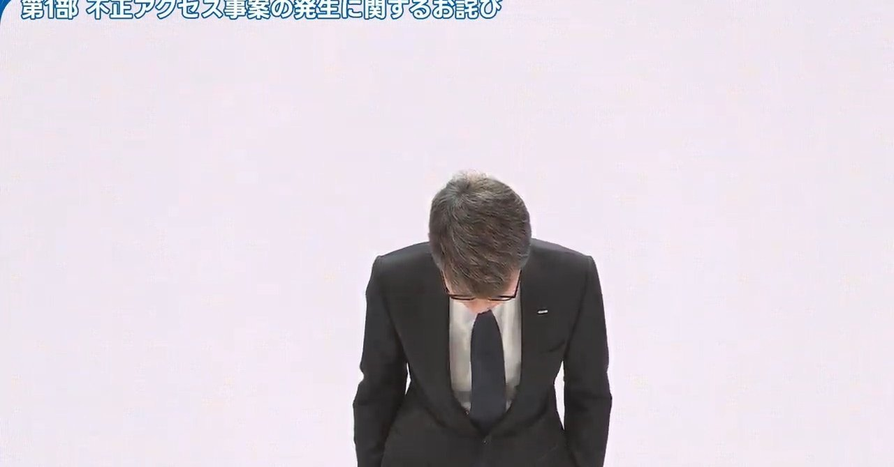
GMO熊谷代表、会見で改めて謝罪 SNS投稿巡り「配慮が欠けていた」
Steam新作の生成AI使用、26年10月は「約半数」が開示―24年1月の1.7％から急増。最多用途はアート、除外フィルター求める声も
https://
gamespark.jp/article/2026/1
1/02/174386.html?utm_source=twitter&utm_medium=social&utm_content=tweet
…
・2024年1月発売作品での開示率は1.7％、2026年10月は49.9％
・AIとは明言されていないものの、
https://
itch.ioでも新規ページ作成が倍増

GMO、この会見でより一層イメージ悪くなった気がする。逆効果。
アーケード版とWindows版の『ザ・ハウス・オブ・ザ・デッド』のいいとこどりで、PCへ勝手移植をするプロジェクトが登場!!
本作「The House of the Dead: ReWrithe」は、1996年のアーケード版と1998年のWin版を悪魔合体させたプロジェクト。
さらに表示 (元の投稿を開く)
今日夜のニュース番組出演で例のサイバー攻撃案件と、その会見にコメントすることになっているのですが、これは・・・
SBI新生銀行、4〜9月純利益横ばい690億円 法人税負担上昇で
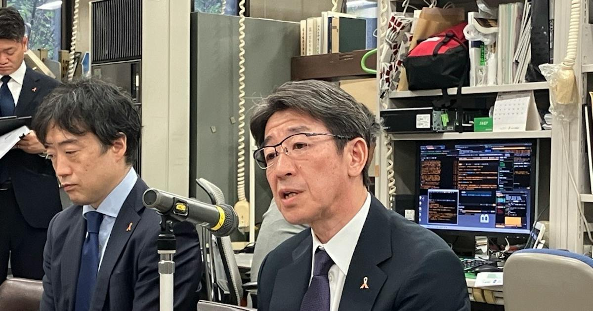
SBI新生銀行、4〜9月純利益横ばい690億円 法人税負担上昇で
記者会見は見ていないのですが、「脆弱性診断はして対応もしたがそれでも漏れていた」というよりも「一旦脆弱性診断して不具合は改修したが、その後あらたな不備（あるいは脆弱性）が生まれした。もっと高頻度で診断をすべきだった」としたほうが通りが良い気がします（←嘘を指南してはイケナイ）
カッコよすぎ‼︎
#あかね噺
『あかね噺』公式アカウント@TVアニメ第2期2027年1月放送！
@akanebanashi_PR
━━━━━━━━━
新ビジュアル解禁
━━━━━━━━━
第2期注目の噺家、新ビジュアル公開！
柏家禄郎（声: ？？？？ )
蘭彩歌うらら（声: #田村睦心 )
禄郎役キャストは
『ジャンプフェスタ2027』ステージにて解禁
◾︎ティザーPV
https://
youtu.be/tkTiGj-Czio
#あかね噺
GMO、これ野々村以来の謝罪会見では…
かに道楽
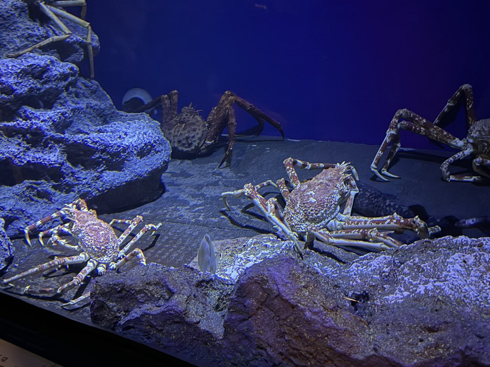
大手女性Vtuber、1年前から〇〇だったことを発表しガチで炎上「詐欺だろこれ」 #VTuber
大手女性Vtuber、1年前から〇〇だったことを発表しガチで炎上「詐欺だろこれ」 - オレ的ゲーム速報@刃の記事ページ
jin115.com
検視官として死亡診断書を書く「フレミング邸の殺人事件」。本格ミステリーのごとく“してやられた感”を味わえる【PR】
https://
4gamer.net/s/G093712.2610
21035
…
ネタバレなしで伝えるなら「アガサ・クリスティーやアーサー・コナン・ドイル好きならハマるはず」「開発はポアロ派」
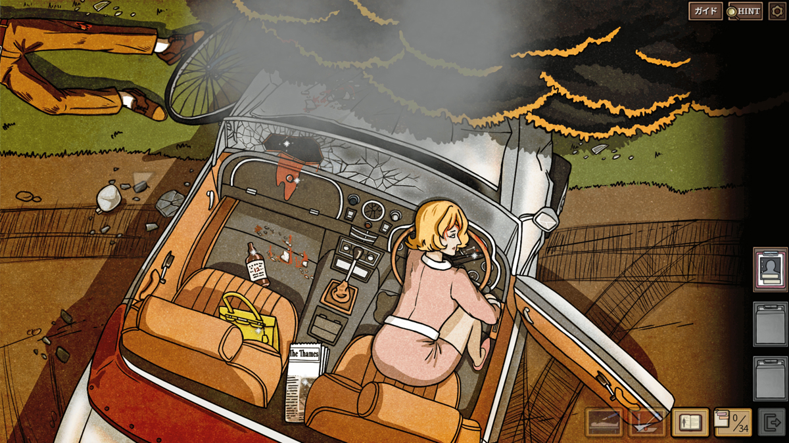
あと最近思うのは情報の価値が一旦下がって上がるんじゃないかと。
人が大量にwebに上げていた情報をAIがまとめつつ希釈された情報が溢れ、新規情報が減って検索で手に入る情報が古くなったり誤謬が増えたり
その世界でも発信し続けている人や特定ドメインからの情報に価値が出てくるイメージ。
これはもちろん私の妄想上の鍵セレモニーであり、本物の写真もさがしてもらったらありました。ICANNによるDNSSECルート鍵のセレモニーだそうです。もっと華やかにやってほしいですね!（違）
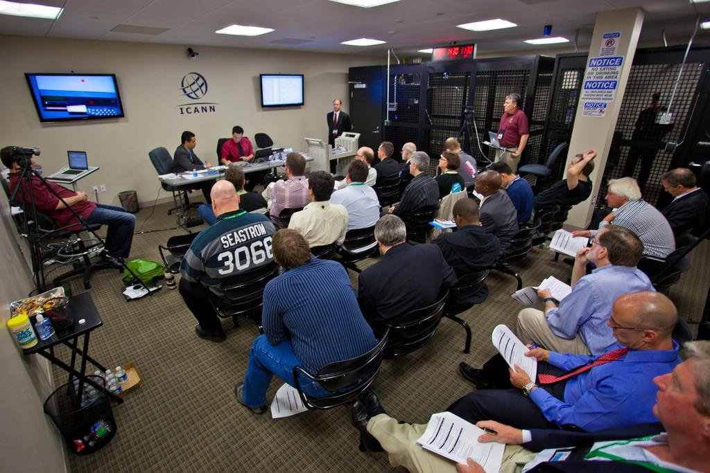

徳丸 浩
@ockeghem
認証局が鍵マテリアルを授受するには、監査人の立会の元、鍵セレモニーという厳格な手続きが行われるそうですが、私は鍵セレモニーというものを見たことがないので、ChatGPTに私の妄想をイラストにしてもらったところ、期待以上の出来栄えでしたので公開します（まったく違う） x.com/ockeghem/statu…
勉強会とかハンズオン、もくもく会とかを運営しているとき
僕への質問相談とかもうAIが回答できるな〜そろそろ僕いらんな〜と思うんですが
当分は人間型のアバターとしてその場に存在している事に価値があるんじゃないかと思っています。口頭での受け答えが周囲に聞こえることで心理的安全性（文字数
人間に残されたのは指導教官役、および肉体を伴う作業のみか...
AIがさらに賢くなり、実験の外注が進めば研究者はやることが無くなりそうです。
あるいは、卓越したセンスを持ちAIに優れた問いを投げかけることができる人間は生き残るかもしれません。

AIDB
@ai_database
東京科学大学で、「AIのみでメンバー構成された研究室」が"量子科学の実験"を一から最後までやり遂げ、新しい法則を1つ導いたとのことです。
人間が担当したのは装置の組み立てと安全装置の設定です。部屋の電気もつけました。
ペイクラウド、不審メール最大713万通 メールアドレス7700万件流出
ペイクラウド、不審メール最大713万通 メールアドレス7700万件流出
最近あまり呟いたりしていませんが
ClaudeやMuseとNotionとDiscordで色々便利なことができないかな〜と試行錯誤しています。
だんだんと精度の高い自分のクローンができあがっていく
めちゃくちゃ楽しい。
新江ノ島水族館はこの並び #青ブタ
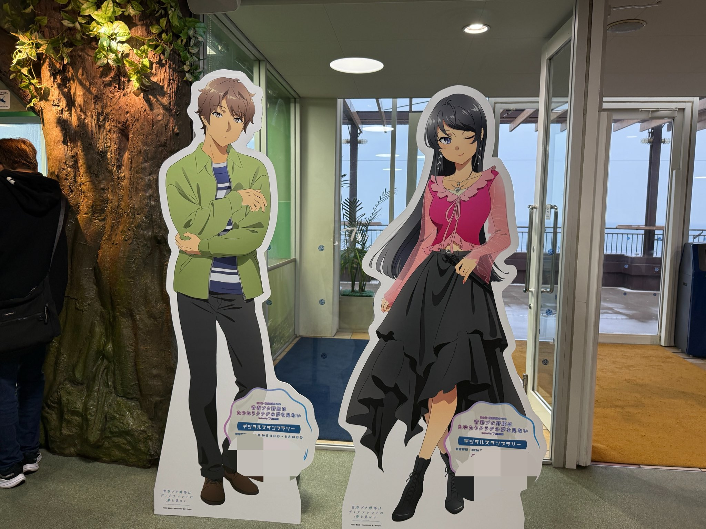
JAL鳥取社長、国内線の維持へ「中堅と必要な関係強化はやっていく」
JAL鳥取社長、国内線の維持へ「中堅と必要な関係強化はやっていく」
認証局が鍵マテリアルを授受するには、監査人の立会の元、鍵セレモニーという厳格な手続きが行われるそうですが、私は鍵セレモニーというものを見たことがないので、ChatGPTに私の妄想をイラストにしてもらったところ、期待以上の出来栄えでしたので公開します（まったく違う）
徳丸 浩
@ockeghem
Cloudflareが認証局を始めるに当たりGMO GlobalSignから鍵マテリアル（ルート証明書の秘密鍵など）を購入するそうです / “Cloudflare、耐量子時代のウェブに向けたパブリック認証局の設立を発表”
https://
htn.to/3YwF5EeH8V
ＧＭＯ、熊谷社長らの役員報酬を3カ月30％減額 不正アクセス問題で
GMO、熊谷社長らの役員報酬を3カ月30%減額 不正アクセス問題で
Cloudflareが認証局を始めるに当たりGMO GlobalSignから鍵マテリアル（ルート証明書の秘密鍵など）を購入するそうです / “Cloudflare、耐量子時代のウェブに向けたパブリック認証局の設立を発表”
Cloudflare、耐量子時代のウェブに向けたパブリック認証局の設立を発表 | Cloudflare
【11月2日23時まで無料配布】未来から来た女性と温暖化の危機に挑むADV『A New Beginning: Final Cut』
https://
GOG.comでの無料配布終了迫る
https://
gamespark.jp/article/2026/1
1/02/174385.html?utm_source=twitter&utm_medium=social&utm_content=tweet
…


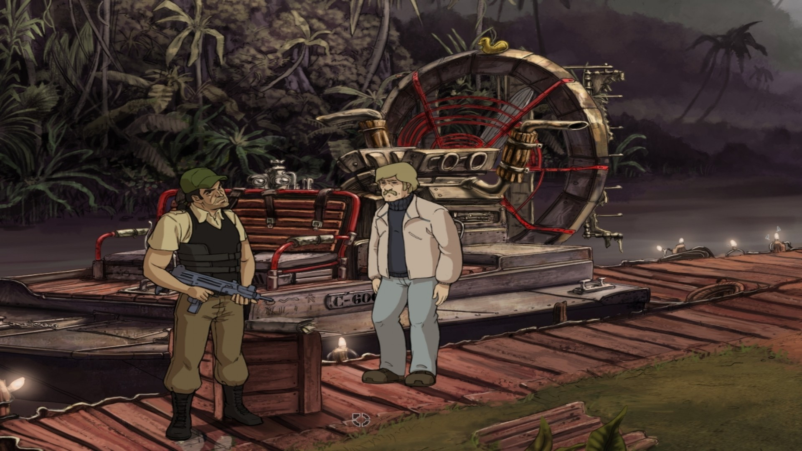

物語は魔法ではなく技術。20th Century Gamesのクリエイティブリードが語る，ゲーム作りの3つのアプローチ
https://
4gamer.net/s/G999104.2611
02019
…
ディズニー傘下の同スタジオでゲーム制作に携わるLis Moberly氏が，「UNDERTALE」や「Celeste」，「ELDEN RING」などを例に作品づくりのヒントを語る
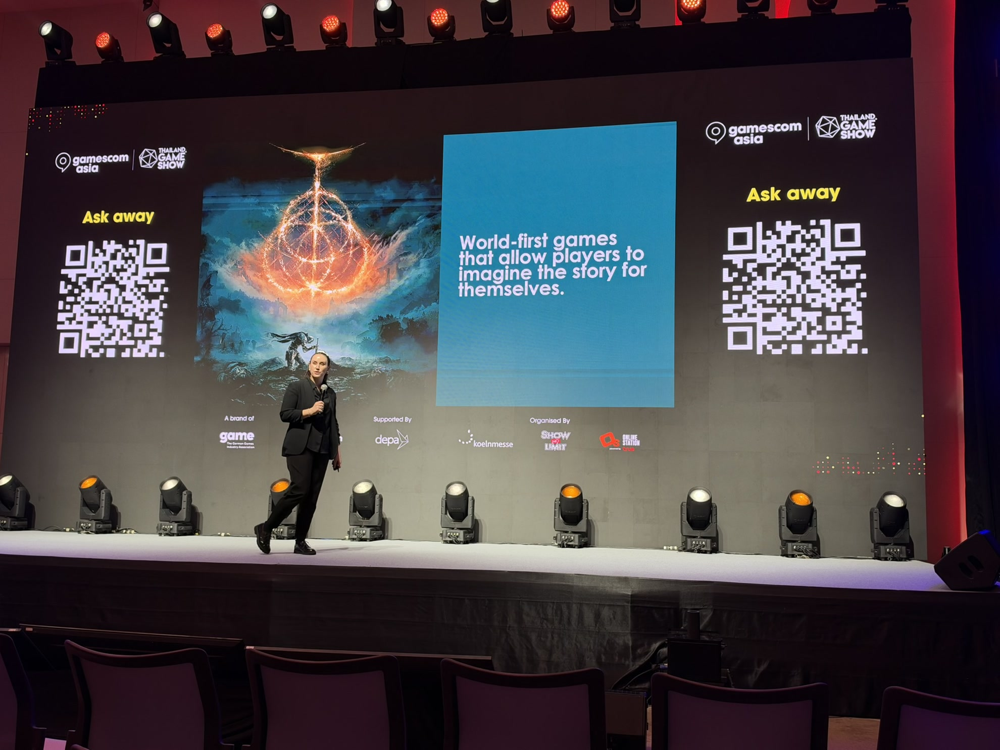
白黒つけられるか。スウォッチの大型フェイスはワントーンが正解
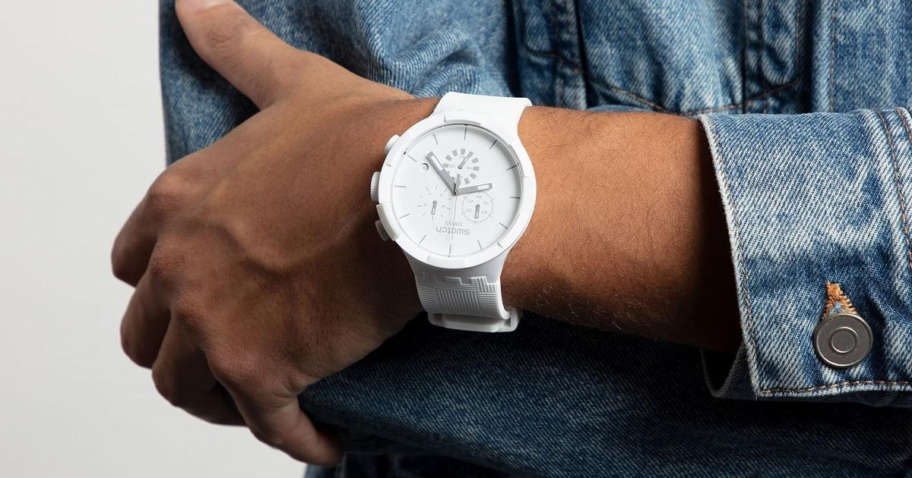
白黒つけられるか。スウォッチの大型フェイスはワントーンが正解 | ギズモード・ジャパン
国債にそろり買いの手 投資家の組み入れ比率１年半ぶり高さ
国債にそろり買いの手 投資家の組み入れ比率1年半ぶり高さ
忙し過ぎ脳がバグってポチった

ゆーじ
@yuujii
iPad mini 8 ポチった
iPad mini 8 ポチった
「
https://
ALL.Net」「Aime」，不正アクセスへの対応のため各種サービスを停止
https://
4gamer.net/s/G999905.2611
02022
…

ゴジラどこで見ようかと思ってたんだけどみんなimaxなんすかね？
例の会見
2日午後から行われるGMO熊谷正寿社長らの会見をライブ配信します。不正アクセスでサービス利用者の個人情報が公開された問題などを受けた...
youtube.com
本当は再度聖地巡礼とかしようと思ったんだけど天気ドン曇りだな…と思ってたら雨振ってきた
今週2回立川行くけどいずれも天気悪いんだよなあ

GMO熊谷正寿社長、記者会見で不正アクセス問題について説明へ
GMO熊谷正寿社長、記者会見で不正アクセス問題について説明へ
AIによる既存ゲームの複製を制限へ。Anthropicが「Claude Code」に新たなルールを導入し，クローンゲームの制作を抑制
https://
4gamer.net/s/G999101.2611
02020
…
オリジナルゲームの制作は認める一方，既存作品の改名による再現は禁止。所有するボードゲームの個人利用向けデジタル化依頼も拒否されたとの報告がある
ガールズバンドクライ Special LIVE “#赤色の響祭”
この後16時よりグッズ販売を開始
場所は横浜ワールドポーターズ6FイベントホールA/Bで実施です
※ぴあアリーナMMではないのでお間違え無く
ご利用には公演チケットと入店整理券が必要ですので
さらに表示 (元の投稿を開く)
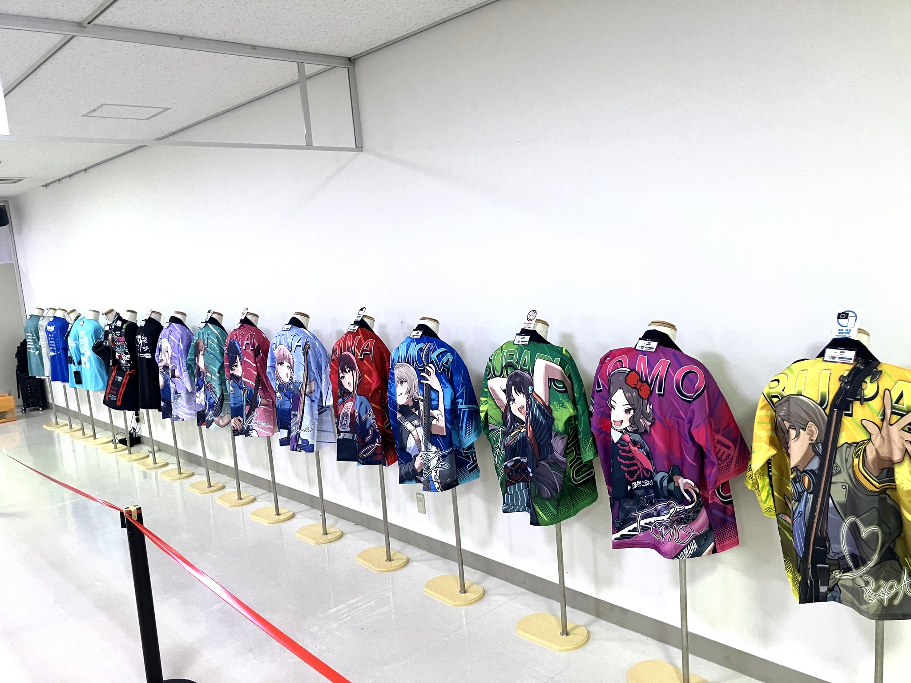
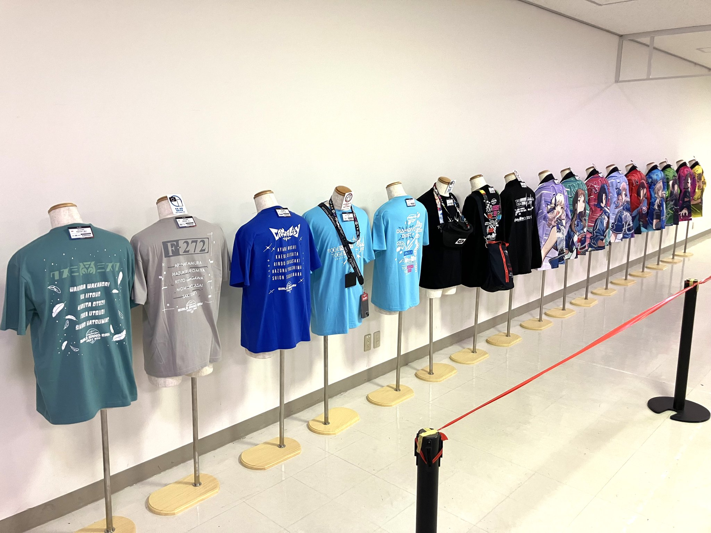
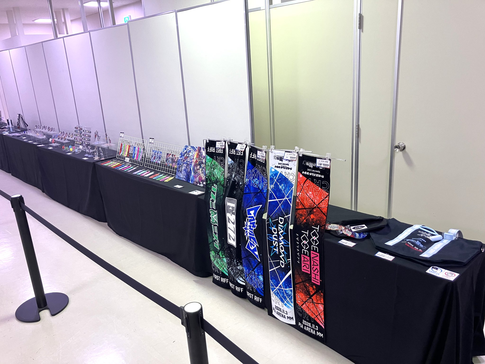

【AIは答えの供給源ではない】 AI時代の「問い」の作り方 ― 生成AIが答えを出す時代に、考える人間であり続ける力 -Udemyコースを一部無料公開- #udemy
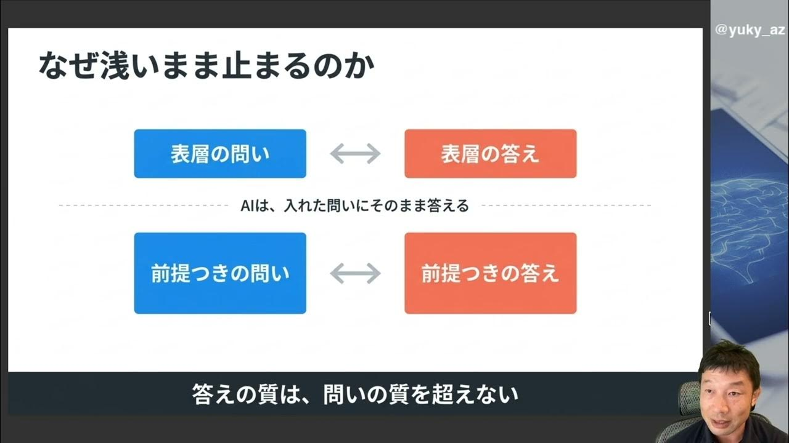
【無料メルマガ「我妻幸長のAIアトラス」】読みやすく体系的な「AIの地図」を、毎週お届けします。新コースのリリースや割引情報も、いち...
youtube.com
Haruhiko Okumuraさんがリポスト
【締切まであと2日】第9回中高生情報学研究コンテスト
申込締切は11月4日（水）正午です。ぜひお早めにお申込みください
中学生・高校生・高専生（3年まで）の4名以内のチームで応募でき、参加費は無料です。
申込締切: 2026年11月4日（水）正午
ブロック大会:
さらに表示 (元の投稿を開く)
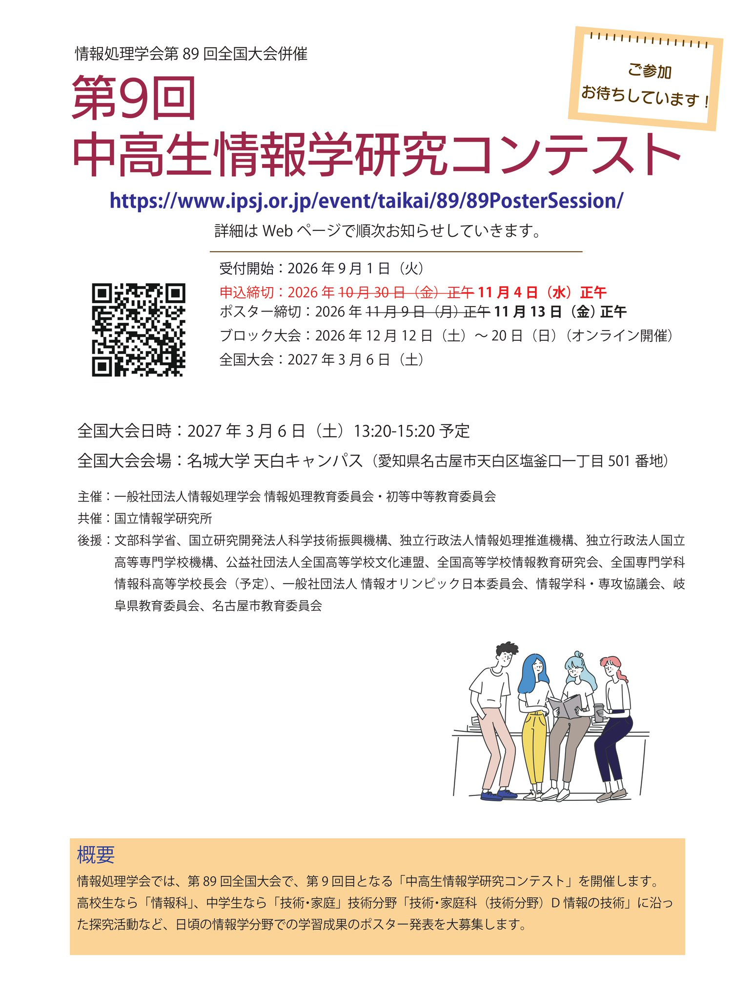
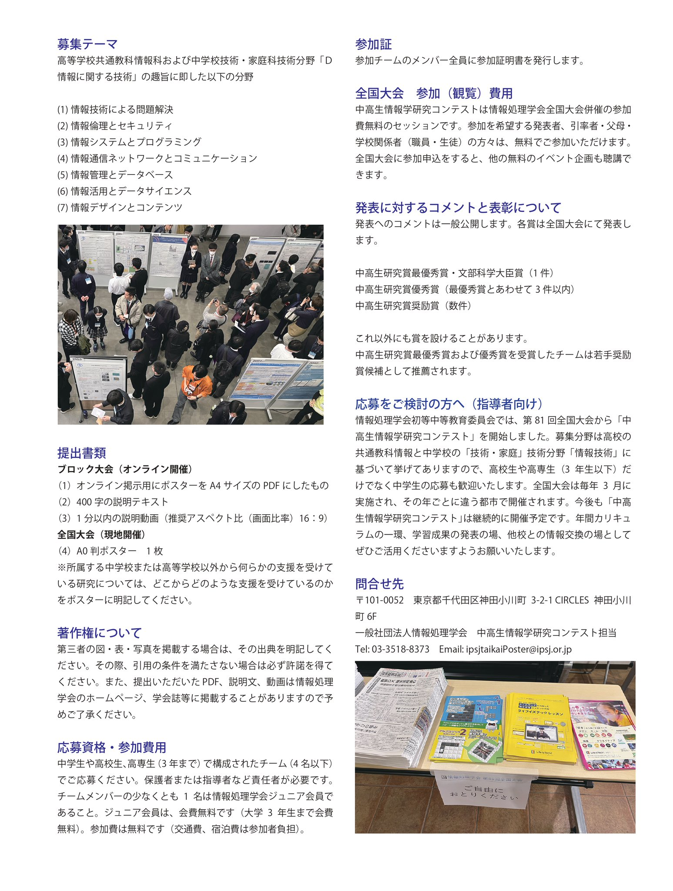
深津 貴之 / THE GUILD, noteさんがリポスト
引き込まれる切り口が一話目からいくつも..! 続きが楽しみすぎる。
山田胡瓜・漫画家
@kyuukanba
【新連載開始＆公開のお知らせ】
本日からコミックDAYSで
「七分の一のサバイバー」の連載がスタートします！
あくまでフィクションではありますが、首都直下地震という「いつか来るその時」を、自分の能力の限りを尽くして描いています！
ぜひ読んでください！！！
「七分の一のサバイバー」-
アンソロピックIPO、日本で最大5528億円調達 スペースX上回る
アンソロピックIPO、日本で最大5528億円調達 スペースX上回る
AIにスケジュール任せて楽チンかと思ったけど、複雑さが増してきて完全に事故る状況が見えてきたのでハンドルを任せるのを辞めた
【最大4人】美少女たちの無人島サバクラ『漂流ダイアリー』完成度向上のため2027年に発売へ―「学園」「メイドカフェ」の新ハウジングテーマと早期アクセスまでのロードマップも
https://
gamespark.jp/article/2026/1
1/02/174384.html?utm_source=twitter&utm_medium=social&utm_content=tweet
…
・完成度向上のため2027年に発売延期
・「学園」「メイドカフェ」など新ハウジングテーマが公開
さらに表示 (元の投稿を開く)
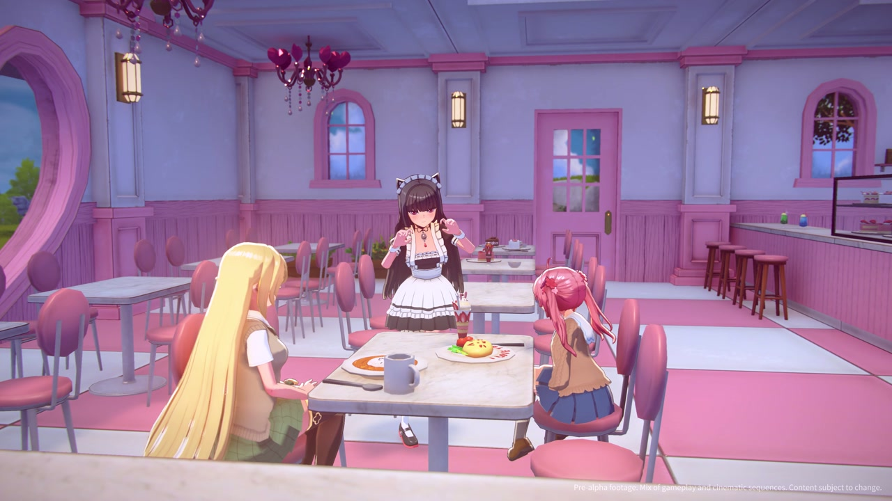
その昔（約20年前）ファミマのフードにはサクッとキチン棒というその名の通りのフードがあってのぅ、私はそれが大好きで毎回買って食べるのでバイト終わりだな〜って頃になると1本揚げて追加していたのじゃ。いつの間にかメニューから消えた。
これは、難しい・・・。
「TRUCK SIMULATOR」で1,000点。超えられる？
作:
@whebool18628
#swipla
https://
swipla.co/g/ewz2uqcd3b?c
=99dq8dv9g
…

追加楽曲紹介
プレデター
遼遼（
@L0_1N
）
ニコニコ動画：
https://
nicovideo.jp/watch/sm348785
04
…
YouTube：
https://
youtube.com/watch?v=AZWrga
b8VyE
…
#プロセカ
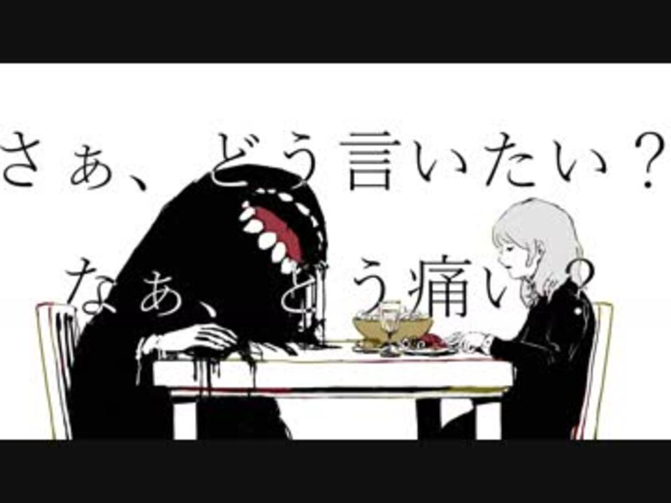
flower 『プレデター』MV/ルワン
米入り…wwwアキバのおでん缶みたいだ。
本日15時より「プレデター」を追加
#プロセカ #ビビバス

カプコン「PRAGMATA」が，タイのゲームアワードで年間大賞に。gamescom asia x Thailand Game Show 2026が閉幕
https://
4gamer.net/s/G999110.2611
02017
…
「鳴潮」「めっちゃカメレオン」「ぽこ あ ポケモン」なども受賞

【問いには深さがある】 AI時代の「問い」の作り方 ― 生成AIが答えを出す時代に、考える人間であり続ける力 -Udemyコースを一部無料公開- #udemy
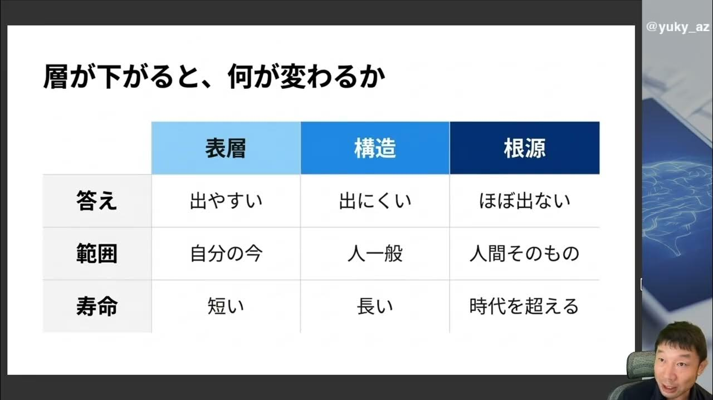
【無料メルマガ「我妻幸長のAIアトラス」】読みやすく体系的な「AIの地図」を、毎週お届けします。新コースのリリースや割引情報も、いち...
youtube.com
人気女性声優さん、とある動画を投稿して1.4万ブックマークの異常事態にｗｗｗｗｗ→「一箇所にしか目が行かない」「ちょっと破壊力がすごい」 #雑談・その他の話
人気女性声優さん、とある動画を投稿して1.4万ブックマークの異常事態にｗｗｗｗｗ→「一箇所にしか目が行かない」「ちょっと破壊力がすごい」 - オレ的ゲーム速報@刃の記事ページ
jin115.com
オープンハウス人事担当「入社2日目から現場、3年下積みでは遅い」
https://
nikkei.com/article/DGXZQO
UC093V00Z01C26A0000000/?n_cid=SNSTW005&n_tw=1793575457
…
内定者期間中のインターンで戸建ての契約を取る人も。「頭のいい人はたくさんはいらない。きれいな戦略を語るより、泥をすすってでも目標をやりきる人が成功します」
オープンハウスの人事担当「入社2日目から現場、3年下積みでは遅い」
タイ在住のアルゼンチン出身プログラマが個人開発する「Airborne Dungeons」は，宙に浮いたダンジョンを4人で脱出する協力型ダンジョンクローラー。Steamで体験版配信中
https://
4gamer.net/s/G105487.2611
02016
…

先週半導体関連下がったから今日下げるかなーと思ったけどそうでもないな
高価な最新スマホじゃなくてもよかった。3万円台の「CMF Phone 1」を1カ月半使って、これがちょうどいいと思えました
高価な最新スマホじゃなくてもよかった。3万円台の「CMF Phone 1」を1カ月半使って、これがちょうどいいと思えました | ギズモード・ジャパン
根強い円売り、米中間選挙後の原油一段高に身構え イラン攻撃再開も
根強い円売り、米中間選挙後の原油一段高に身構え イラン攻撃再開も
メロ メロ メロ メロ
やっぱScreenXはよかったなあ、蘇我まで近ければあと1回くらい行ったかも
ScreenXがあってもやっぱ大音圧でうおおおお！！ってなってほしいのだが、蘇我にはそれがあった……
折角美しいRが筐体にあるのにその先頭に無理やりくっつけたみたいなゴテゴテのQR読み取り部、どうしたらこういうデザインになってしまうのか…もしかして形を変更不可なのか？

inuro
@inuro
コレもう訳わかんねえな
CINE8 が当たり前だと思っていた川崎市民だけど530人入る箱ってそうそうない（そしてそんな箱でアニメをやってくれる映画館はさらに少ない）ことに今年映画館通いまくって気づいた
シネマシティbスタのだいたい2倍くらい？
すぺ
@spe_cpk
CINE8に500人も入るのに！
普通客が入らなくなって上映が終わっていくはずなのに！
なるせひろのりさんがリポスト
もともとついてたでしょうが！

テスラさんがリポスト
劇場板とっび・ざ・だっし！板のぬりあと
アットコスメ、会員約300万人分の情報漏えい 不正アクセスで
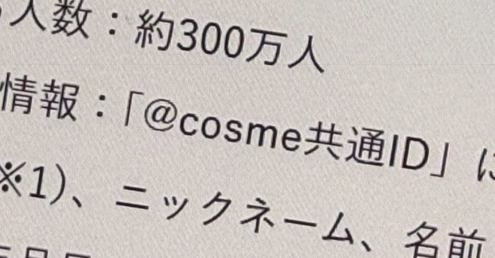
アットコスメ、会員約300万人分の情報漏えい 不正アクセスで
【緊急メンテナンス継続のお知らせ】
昨日より実施しております緊急メンテナンスにつきまして、復旧対応を継続しております。
現在もゲームをプレイいただけない状態となっております。
サービス再開の見通しが立ち次第、改めてお知らせいたします。
さらに表示 (元の投稿を開く)
ALL.Netサービス情報
@allnet_info
【緊急】【ALL․Net、Aimeメンテナンス中】
現在も引き続きメンテおよび復旧に向けた対応を進めております。ALL․NetおよびAimeの各種サービスはご利用いただけません。終了日時は未定です。
復旧の見通しが立ち次第、改めてお知らせいたします。長時間にわたりご不便をお掛けし申し訳ございません。
今回は（たぶん）観られるので楽しみです！
【問いは思考の設計図である】 AI時代の「問い」の作り方 ― 生成AIが答えを出す時代に、考える人間であり続ける力 -Udemyコースを一部無料公開- #udemy
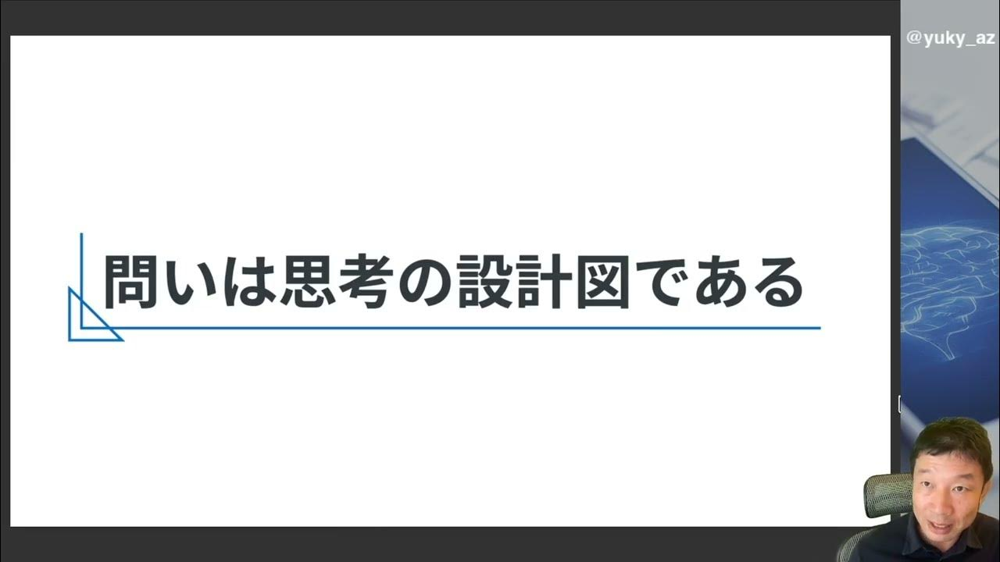
【無料メルマガ「我妻幸長のAIアトラス」】読みやすく体系的な「AIの地図」を、毎週お届けします。新コースのリリースや割引情報も、いち...
youtube.com
プレステ2を携帯機にした挙句ふたつ折りに魔改造した「PS2 Duo」
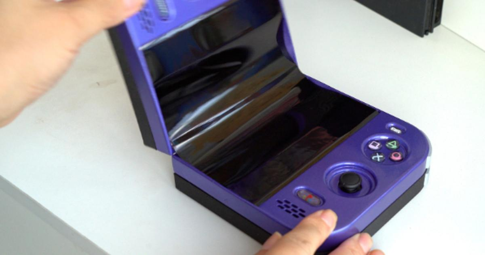
プレステ2を携帯機にした挙句ふたつ折りに魔改造した「PS2 Duo」 | ギズモード・ジャパン
かつてこれほどまでにTジョイ蘇我が注目されたことがあったのだろうか
なるせひろのりさんがリポスト
動物園「ノースサファリサッポロ」に札幌市が立ち入り検査 市街化調整区域に無許可で施設建設し除却命令 運営会社「動物関連建物がありすぐの撤去は難し...
https://
youtu.be/cPprMG_kyGQ?si
=P5GP_akuyi5VktAl
…
@YouTube
より
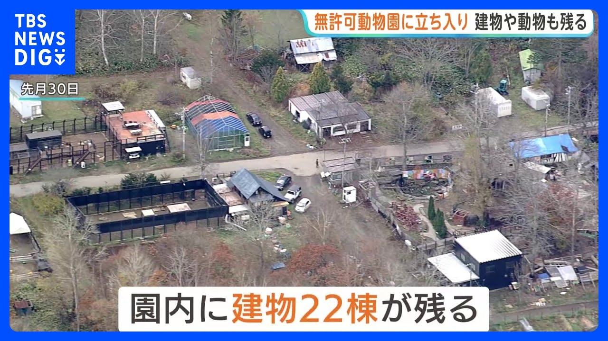
市街化調整区域に無許可で施設を建設し、札幌市から除却命令が出されていた動物園「ノースサファリサッポロ」に対し、札幌市はきょう、立ち入り...
youtube.com
シネマシティ1階は常に聖地巡礼するオタクが撮影会してて絵面がおもろい
普通私以外に一眼で写真撮ってる人ってまず見かけることないんだけど（大半スマホでマイノリティ）、ヤチヨフィギュアをちゃんと撮るためなのか一眼勢が他に3人もいてビビり散らかした

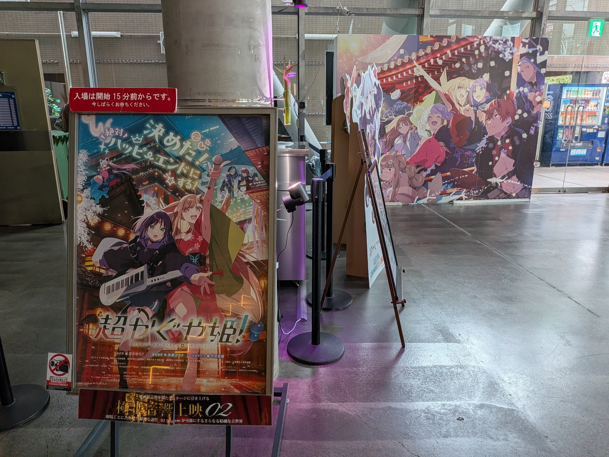

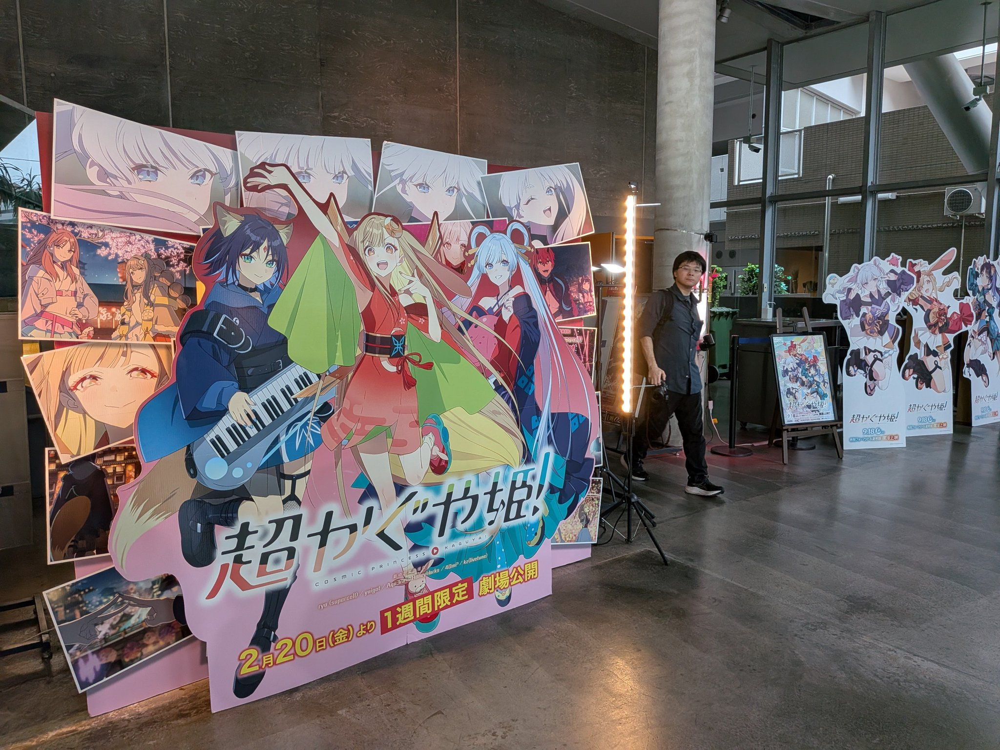


とりしま (Sub I/O)
@iotorishima
「超かぐや姫！」通常上映の〆でシネマシティ b studio の極音 Atmos で観てきた…！！最高でございました……
とにかくスクリーンが超明るい明瞭な映写で驚き……F列で観たけど没入感&音響的にベスポジかも
声が反響しがちなのはチネと比べて明確に弱いけど、戦闘や音楽の迫力は互角以上で満足（続） x.com/iotorishima/st…
おはようございます〜！！！
この時期は寒暖差が激しくて着るものが難しいですよね…！
11月もよろしくお願いします！
ちなみに今月1番最初の昨日は、私にとって最高の一日になりました！
ムーミン谷の世界をリアルでも体験。「ムーミン：ムーミン谷の夏まつり」発売記念イベント，11月21日・22日にコクーンシティで開催
https://
4gamer.net/s/G101345.2611
02015
…
フォトスポットやぬりえひろば，しかけつき展示パネルなどを用意。館内3か所のスタンプを集めるとオリジナルステッカーがもらえる

「Aeruta（アルタ）」，PS5＆Switch向けパッケージ版の発売を延期。新たな発売日は12月24日
https://
4gamer.net/s/G102919.2611
02014
…
・発売延期は「製造上の事情によるもの」とのこと
・ダウンロード版は予定どおり12月10日にリリースされる
この寒暖差にかなり体調が左右されている
『超かぐや姫！』公式＠映画 復活上映中！さんがリポスト
≪ アニメスタッフセミナーレポート ≫
#TOKYOANIMENEXT
『超かぐや姫！』のコラボライブはこうして生まれた
⠀
ライブ演出を担当した中山直哉さん、
アニメーションプロデューサーの桃原一真さんに
ご登壇いただきました
⠀
ご来場いただいた皆さま、ありがとうございました！
⠀
@Cho_KaguyaHime
さらに表示 (元の投稿を開く)
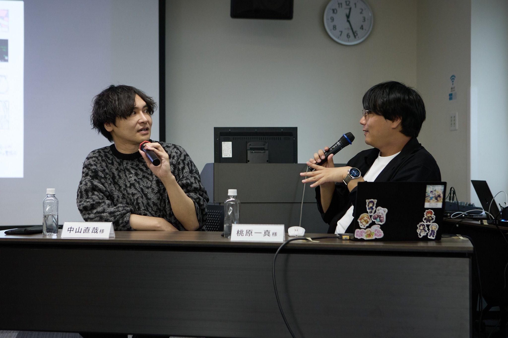

入間航空祭 入ったのって16年17年だけなのか
【イントロダクション】 AI時代の「問い」の作り方 ― 生成AIが答えを出す時代に、考える人間であり続ける力 -Udemyコースを一部無料公開- #udemy
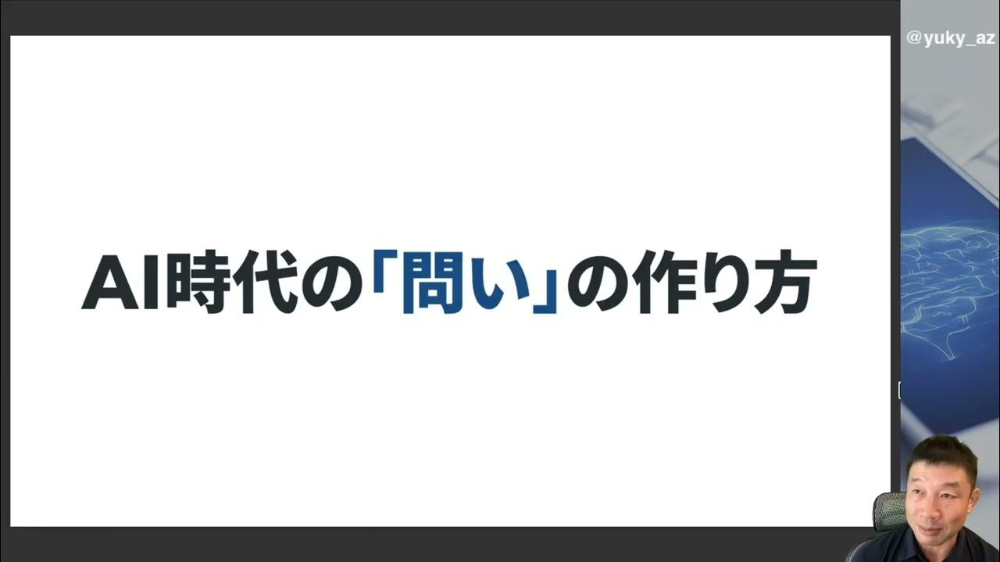
【イントロダクション】 AI時代の「問い」の作り方 ― 生成AIが答えを出す時代に、考える人間であり続ける力 -Udemyコースを一部無料公開- #udemy
なるせひろのりさんがリポスト
お大事にしてください泣
浜崎真緒® - DJ Mao - Mao Hamasaki®
@Hamasaki_mao
皆さんお騒がせしてます
本当に自分の不注意でやられてしまいました。
そして、沢山連絡ありがとうございます！
今香港の病院で治療中でして、意識もはっきりと戻り着々と回復に向かっております！
午後から精神科のお医者さんにも見てもらえるみたいで何事もなければ退院できそうです！
闘魂のアップデート今日のはずなんだけど時間よくわからず
後パッチノートも見当たらないんだけどあるんだろうか
このゲームマジで情報が見つからない
あまりにも可愛すぎる
【プロモーション動画】 AI時代の「問い」の作り方 ― 生成AIが答えを出す時代に、考える人間であり続ける力 -Udemyコースを一部無料公開- #udemy
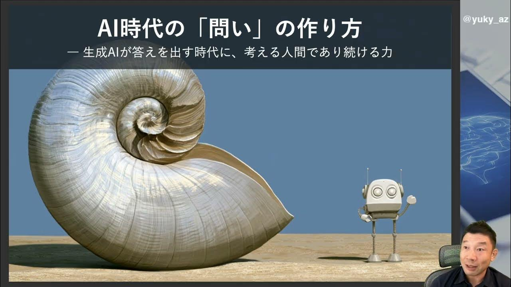
【プロモーション動画】 AI時代の「問い」の作り方 ― 生成AIが答えを出す時代に、考える人間であり続ける力 -Udemyコースを一部無料公開- #udemy
エスカー初めて課金しました。映像が華麗ですね。 (@ Enoshima Escar - Part 1 (江ノ島エスカー 1区) in 藤沢市, 神奈川県)
https://
app.foursquare.com/share/checkin/
6ae807c8a1d8e3552e0d9de1?s=TZiDY4-8rQaWLWfPITHwY--oSyE&lang=ja
…

『ゼルダの伝説』ローソンで「ハートの器」インテリアライトが発売！持ち歩きたくなる「ルピー」のシリコンポーチも
https://
gamespark.jp/article/2026/1
1/02/174383.html?utm_source=twitter&utm_medium=social&utm_content=tweet
…
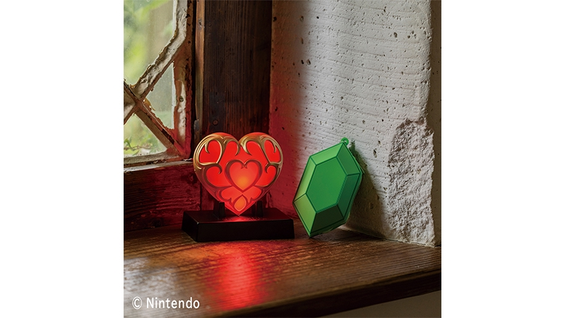
大吉先生はスパロボガチ勢だから、モリザベスを好きになるのも納得！
スパロボ愛を熱く語る大吉先生が本当に最高なんですよね！
「囲碁将棋チェススパロボ」は名言だと思う！
あの熱量、いろんな人に見てほしいんだけど、YouTubeの公式動画が消されちゃったんだよなぁ……
スマートニュースに不正アクセス アプリの一部機能を停止
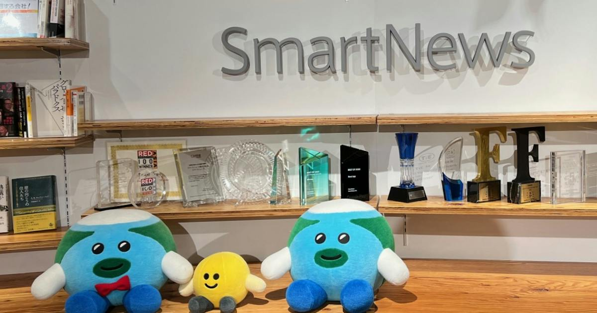
スマートニュースに不正アクセス アプリの一部機能を停止
最近演出技法について話題になってたのでそこに注力して観ていたが、「レイアウトで語る」シーンは全編通してあまり多くなく数回程度？でいずれも彩葉とかぐや/ヤチヨの関係性や距離の暗喩として使われており、カメラをベタ置きする代わりにデフォルメ・表情・芝居で画面を保ってて本当に凄い
Web 系的なアニメートとは毛色が違うんだけど、特に日常パートは絶妙にキャラ崩壊しない程度に表情を崩してキャラ作画自体をふよふよにしたりしてコミカルにしていて、この表現手法自体がカッチリした作画で描くよりもある意味大変なのではないか、などを考えていた
動くアニメ自体の力を信じた作り
「超かぐや姫！」通常上映の〆でシネマシティ b studio の極音 Atmos で観てきた…！！最高でございました……
とにかくスクリーンが超明るい明瞭な映写で驚き……F列で観たけど没入感&音響的にベスポジかも
声が反響しがちなのはチネと比べて明確に弱いけど、戦闘や音楽の迫力は互角以上で満足（続）
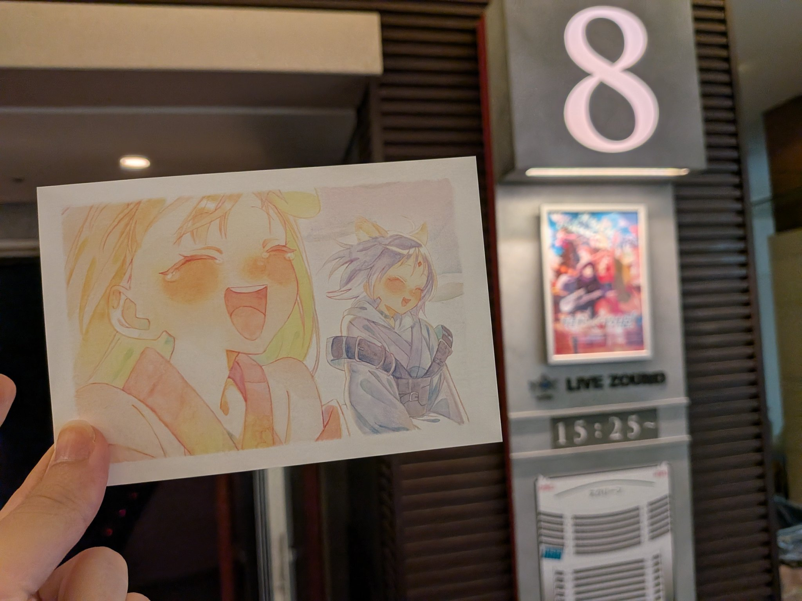
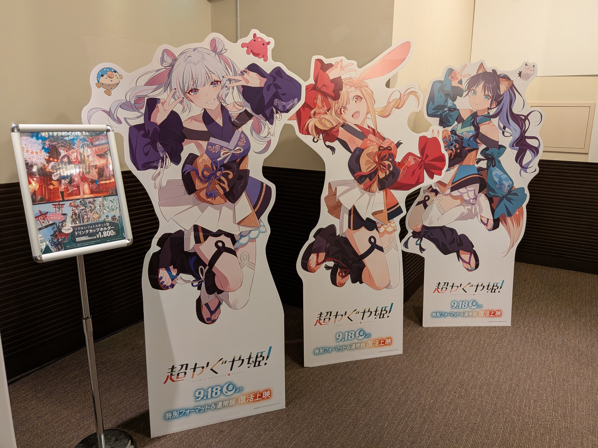
とりしま (Sub I/O)
@iotorishima
終映間近なので地元チネチッタの LIVE ZOUND で「超かぐや姫！」観てきた…！！最高でございました…
音響はライブ感あって最高だが ScreenX の没入感を知ってしまうと総合点では蘇我が上かな…と思ってたけど、最後の Reply MV の音響が素晴らしすぎて震える
最高音響でデトックスできて満足…… x.com/iotorishima/st…
三菱商事がLNGカナダを米ファンドに一部売却 2500億円、資本効率化
三菱商事がLNGカナダを米ファンドに一部売却 2500億円、資本効率化
「AI固有の言い回し」みたいに否定的に紹介される表現や言葉は、単にその人に馴染みがない分野で人が使ってたものが出てきただけなことが多い気がするよな
米フロリダ州でビジネスジェットが墜落し搭乗者9人全員死亡→ドラレコで撮られた映像がヤバすぎる・・・ #酷い話・事件
米フロリダ州でビジネスジェットが墜落し搭乗者9人全員死亡→ドラレコで撮られた映像がヤバすぎる・・・ - オレ的ゲーム速報@刃の記事ページ
jin115.com
中国の山里にデータセンター建設ラッシュ でも市民は潤わず
https://
nikkei.com/article/DGXZQO
CB280KF0Y6A021C2000000/?n_cid=SNSTW005&n_tw=1793501429
…
23カ所の開発予定地がある韶関市。投資額は2兆6000億円に上りますが、仕事も給料も少ないといいます。建設用地として土地を収用された住民は補償金を受け取れていません。
[FT]中国の山里、データセンターの恩恵乏しく
ポン☆潤々さんがリポスト
ファミマから、嬉しいご報告です。
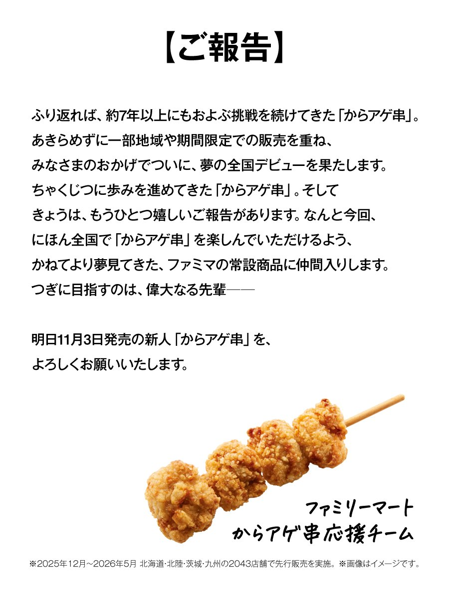
『超かぐや姫！』公式＠映画 復活上映中！さんがリポスト
━━━━━━━━━━━━━━━━━━━
【Netflixクリエイターズ道場〜アニメ〜】
初開催＆参加者募集！
━━━━━━━━━━━━━━━━━━━
次世代のアニメプロデューサーへに向け、
『サイバーパンク エッジランナーズ』
『超かぐや姫！』などを題材に、
さらに表示 (元の投稿を開く)
GMO社長がきょう午後に会見、攻撃者は北朝鮮系のハッカー集団と関係か #ldnews
https://
news.livedoor.com/article/detail
/32711522/
… 結局、犯人特定できたとしても何も出来ないって事ね。
GMO側 北朝鮮の関与の可能性を含めて調査 きょう午後 熊谷社長会見へ 2年前にセキュリティ子会社はシステム脆弱性を指摘
外国人「日本人はグロを嫌うのに葬式だけめっちゃハードコア」
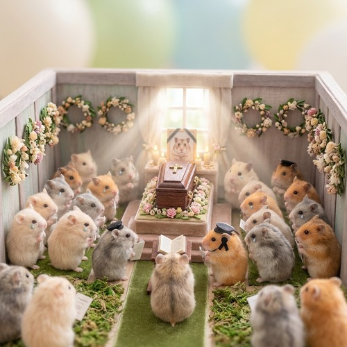
外国人「日本人はグロを嫌うのに葬式だけめっちゃハードコア」 : ハムスター速報
なるせひろのりさんがリポスト
【「アララ」7700万件のメアド流出】
「アララ」7700万件のメアド流出 - Yahoo!ニュース
岩屋洞窟が遠すぎる

さて、うちのウドの街もだいぶサマになってきた。
あと残るは……こいつだよね

XREAL AURAの日本発表会に来ています。
後ほどちょっとだけ実機試せると聞いているので楽しみ。
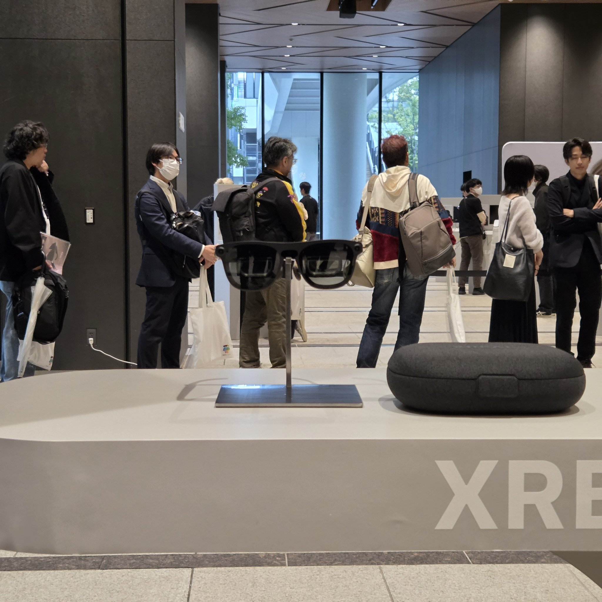
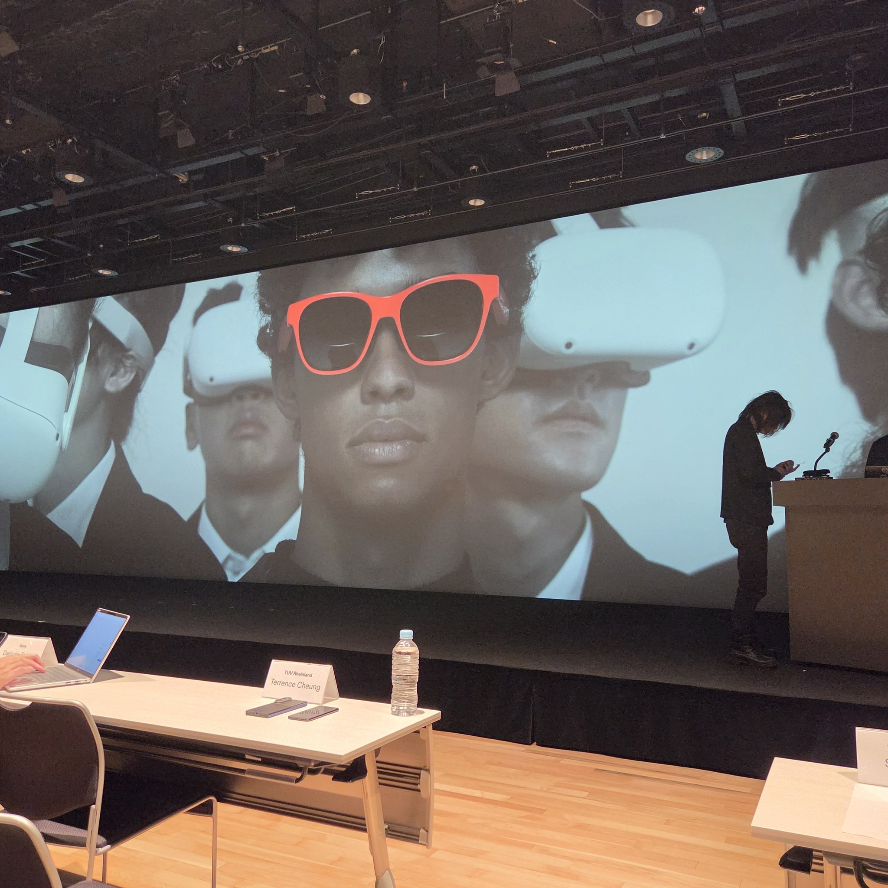
輿水畏子さんがリポスト
私が愛するフランス人女性、フランス語
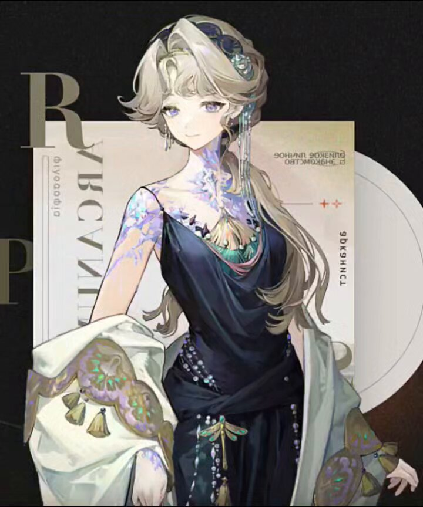
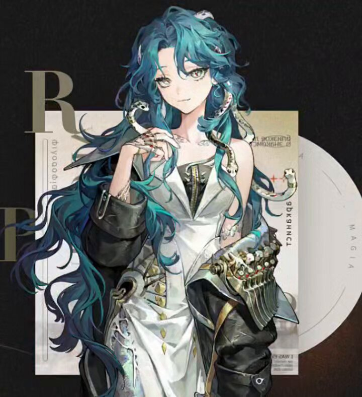
こう寒いと暖かい麺類が食べたくなる… タンメン一丁！

Amazon：『デート・ア・ライブⅤ』鳶一折紙 精霊ver. 1/6スケール完成品フィギュア PVC&ABS製 塗装済み 予約受付開始！
『デート・ア・ライブⅤ』鳶一折紙 精霊ver. 1/6スケール完成品フィギュア PVC&ABS製 塗装済み
なるせひろのりさんがリポスト
＞顧客情報を含む一時ファイルなどを、ロゴ画像と同じ公開領域に保存する設計
ちょっと何言っているのか分からない
（おバカすぎる意味で）
ITmedia NEWS
@itmedia_news
ロゴ画像用の公開領域に顧客ファイルも保存 GMO系シングルサインオン、4.5万人分漏えい
https://
itmedia.co.jp/news/article/2
611/02/2000002780/
…
いきなりの雨、寒ッ！
同じ回にいらっしゃってたのか…
今さらパンフレットを代行で購入してほしいなんて言えないですよね…。
買えた人がうらやましい…、。
#前橋ウィッチーズ
ユウマボウズ
@Gc5RLsVaaV12052
劇場版前橋ウィッチーズのパンフレットがどこの映画館も品切れで買えません…
公式に意見を出したいのですが、どこに送ればいいのでしょうか。
通販でもいいから欲しいのに、手に入らない難民になってます。
#前橋ウィッチーズ
昼食後、横浜ブルク13で映画を続けて見ます。
まずは前橋ウィッチーズ!!!
#前橋ウィッチーズ
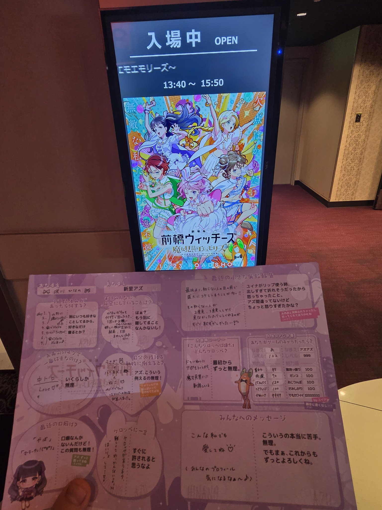


ユウマボウズ
@Gc5RLsVaaV12052
少し仮眠してから桜木町へ移動
本当は孤独のグルメで紹介されたキッチン・カフェばるに行くはずが明日まで臨時休業
仕方がないので、画像にあるこちらのお店へ
すごい煮干しラーメンと鮨というなかなかないセットを頼む
どちらも美味い!!!
お昼にいいご飯をいただきました!!!
#トゲトゲラーメン部
なるせひろのりさんがリポスト
唐詩郎さん(
@towsilow
)は現在は鬼籍に入られておられますがニンニクと肉と巨乳大好きな造形作家さんでした。見栄子やぷりんの原型も作っていただいたりセクシー見栄子シャツを着てコンビニに行ったら外人の店員さんに気に入られて追加でシャツを売りつけてくるなどお世話になったものです。
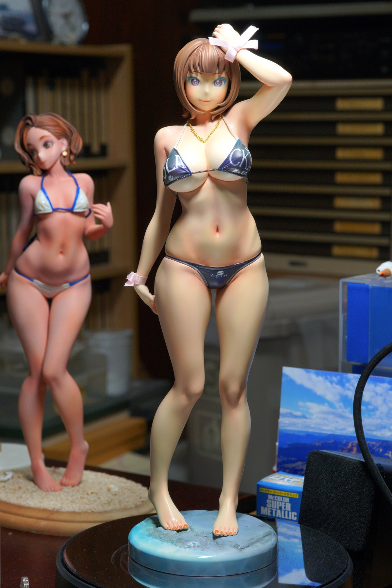


「Warframe」，史上最大規模のアップデート「Warframe: Tau」を12月に無料配信
https://
4gamer.net/s/G017216.2611
02011
…
・新たな星系「Tau」が登場
・67体目となる新WARFRAME「Brysko」も参戦

つば二郎@きいちゃんすこすこ侍さんがリポスト
なんと!!!
あ、ありがたい!!
NHK で名前だしていただけるなんて。。。
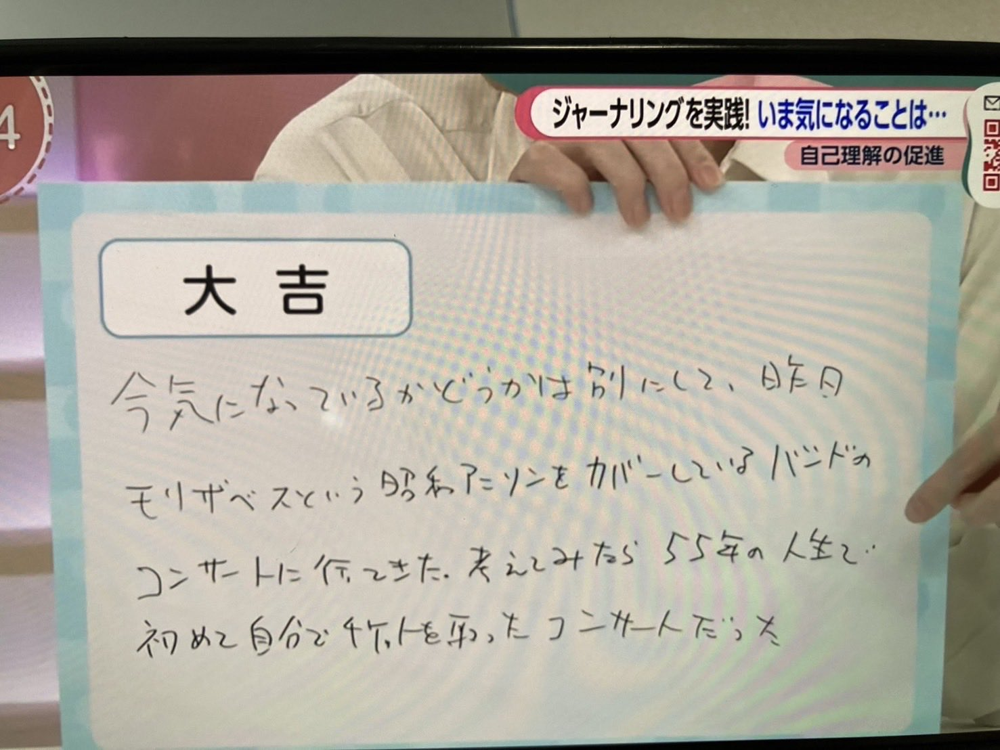
原治武
@jibuppen
なんと！
今日のNHKあさイチで博多大吉さんが昨日のモリザベスのライブに来てくれていた事を言ってたとの事！
しかも生まれて初めてチケットを買って来てくれてたみたいで、とても嬉しいっす！
『ピクミン』めじるしアクセサリー第2弾が11月第4週に再販！いろいろな持ち物に付けれる便利なチャーム
https://
gamespark.jp/article/2026/1
1/02/174382.html?utm_source=twitter&utm_medium=social&utm_content=tweet
…


Markdownは、その前から人が慣習的に書いてた記法ベースだからねぇ
Aki(本物)＠めもおきば
@nekoruri
大元は、普通に人が普通に使ってた記法だったはずなんだよね……
「ロックマン：デュアル オーバーライド」，新ボス「クックマン」を公開。料理とカンフーを融合させた格闘スタイルが特徴
https://
4gamer.net/s/G096894.2611
02012
…
巨大な厨房を舞台に，飛び交う調理器具を避けながら進むステージが登場。「ロックマン11 運命の歯車!!」が67％オフになるセールも開催中

通常配信の最終回なのが寂しいですが、最後までれんじゃむで楽しみたいと思います～！！
OpenAIのAIエージェント、人類から監視されないようにがんばる。そのためには嘘もつく
OpenAIのAIエージェント、人類から監視されないようにがんばる。そのためには嘘もつく | ギズモード・ジャパン
出張バッグの充電器、1個で済むぞ。Anker巻取り式が3,000円台 BuyPR
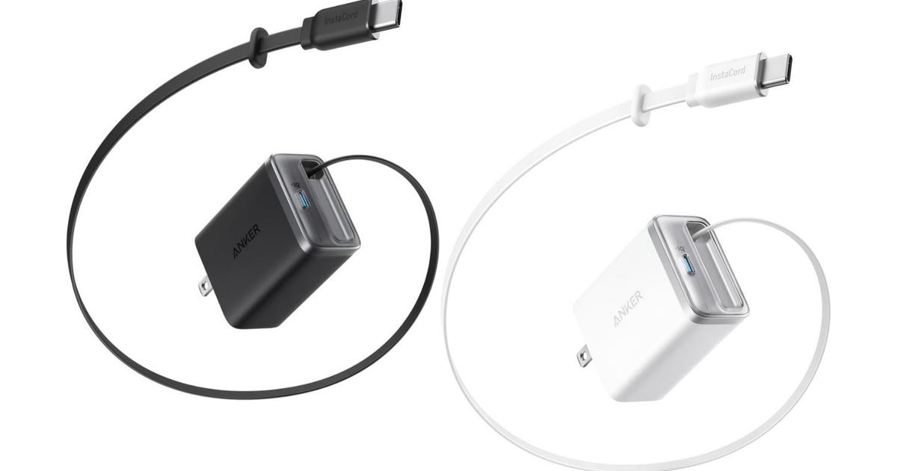
出張バッグの充電器、1個で済むぞ。Anker巻取り式が3,000円台 | ギズモード・ジャパン
出身地(都道府県)を当てるやつ、手がかりゼロで都道府県しか聞かないなら単に人口の多い順に聞くだけで平均的には少ない質問であたりそう
東京エレクトロン株が大幅高 半導体「スーパーサイクル」見方強まる
東京エレクトロン株が大幅高 半導体「スーパーサイクル」見方強まる
なんでかイラストは才能かどうかみたいな話が無限にTLに流れてくるようになってしまった
キオクシア、普通に適正株価に戻っただけちゃうんか…？
怖がりの底辺ストリーマーに指示しまくるホラーゲーム「リスナーさん、あっちに行きましょうか？」，デモ版を配信中
https://
4gamer.net/s/G105481.2611
02010
…
ストリーマーが指示を聞き逃して変な方向へ進んだり，肝心なときに固まったりすることもある
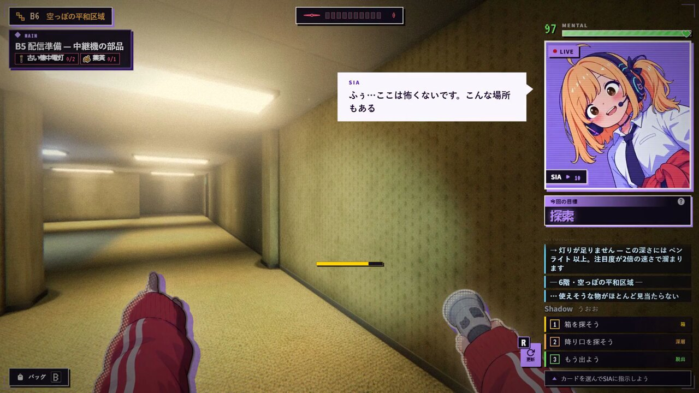
なるせひろのりさんがリポスト
先月29日、東京 中野区の商業施設「中野ブロードウェイ」に入る時計店で男がおよそ4600万円相当の高級腕時計を試着したまま逃走した事件で、店に1日、盗まれた腕時計が宅配の荷物で送られてきたことが捜査関係者への取材で分かりました。
▼詳しくはこちら
https://
news.web.nhk/newsweb/na/nd-
20261102de69446
…
#nhk_video
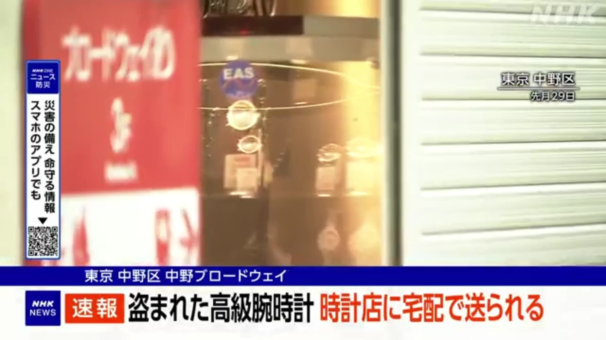
劇場版前橋ウィッチーズのパンフレットがどこの映画館も品切れで買えません…
公式に意見を出したいのですが、どこに送ればいいのでしょうか。
通販でもいいから欲しいのに、手に入らない難民になってます。
#前橋ウィッチーズ
なるせひろのりさんがリポスト
ヤクザもののゲーム作ってた会社の解散の件ってさ、予想では反社の方にインタビューしちゃったとか、そういう繋がりを持ってしまったこととかそういうところで一気に明るみになってNGになったんちゃう？
反社の人と繋がりがあると全部NGになるから。
ゴジラ小口2、珍しく金曜公開じゃないのか
メモ
Gmail, YouTube乗っ取られた方の記録。Gmailに来るログイン願いメールは大半が罠。1000円課金した。
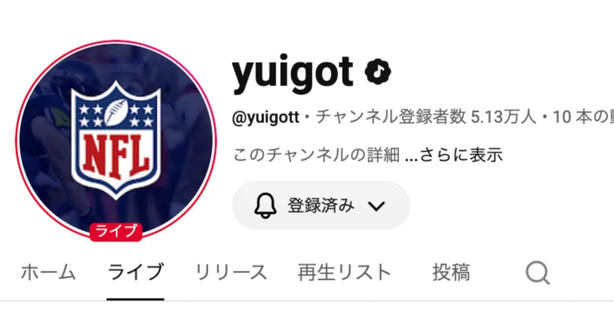
Gmail&YouTubeアカウントが盗まれた件についての注意喚起｜yuigot
ギズモード・ジャパン（公式）さんがリポスト
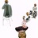
Phonemer入れてむっちゃカッコいいビート作ってくれてる
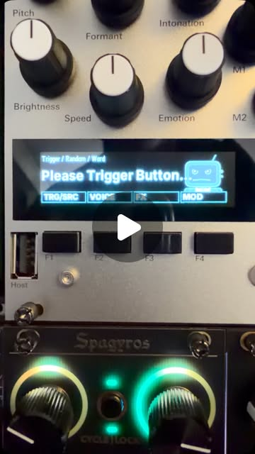
pratompong+on (@ton_noton) • Instagram reel
角打ち発祥の地と言われる北九州、特に八幡製鉄所近くの戸畑は夜勤明けの製鉄マンが飲めるよう昼から飲める角打ちが多かったそう。その代表格とも呼ばれる「藤高酒店」、大正時代からの建物の中で十六茶ペットボトルに入った水をチェイサーに北九州の酒、天心。日本のマンパワーを支えてきた店に乾杯。
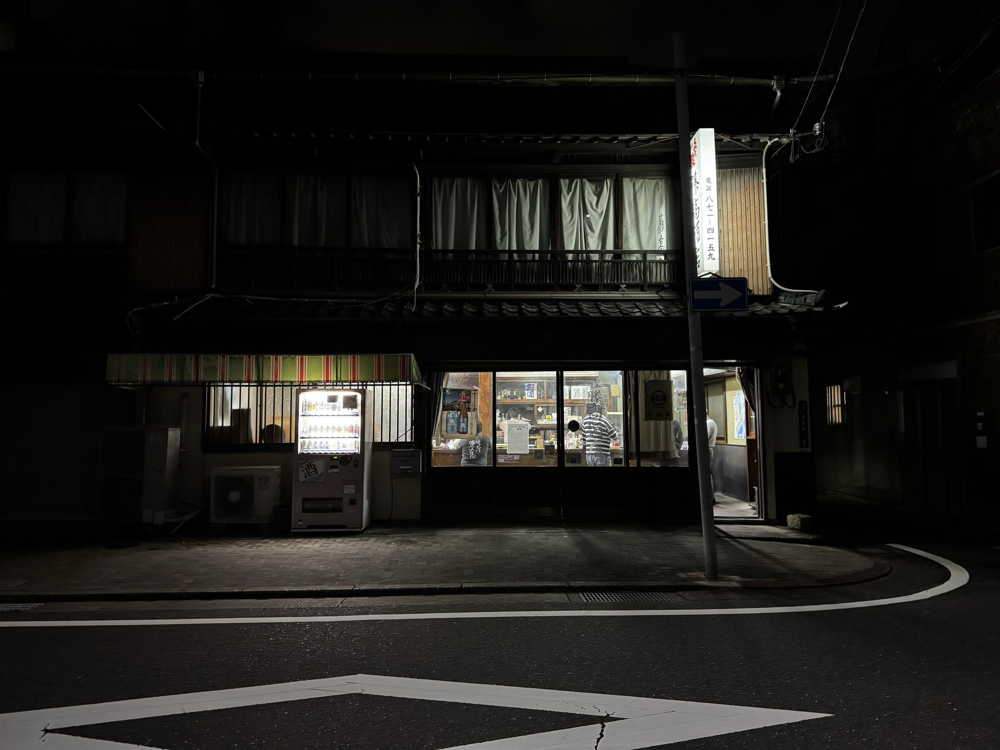

米経営トップが「震えた日」 ニデック問題に揺れる日本に教訓
米経営トップが「震えた日」 ニデック問題に揺れる日本に教訓
17年のSVには看板変わってる
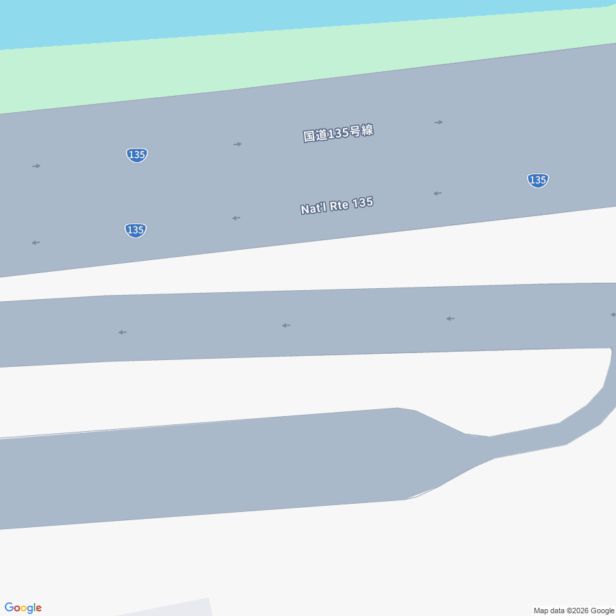
Find local businesses, view maps and get driving directions in Google Maps.
google.co.jp
【悲報】名越スタジオ、解散 #ゲーム業界
【悲報】名越スタジオ、解散 - オレ的ゲーム速報@刃の記事ページ
jin115.com
ギズモード・ジャパン（公式）さんがリポスト
このCyma Formaというブランド、宮地楽器さんのブースで触ったらすごく好きな感じでずっとこれのことばかり考えている。おフランスのいわゆるドローンシンセ。FoMは意表のつく出会いがいいね。
@patching_for
@fomtokyo

日本は「50歳真ん中社会」 人口の過半が50代以上
https://
nikkei.com/article/DGXZQO
DK1649U0W6A910C2000000/?n_cid=SNSTW005&n_tw=1793574502
…
日本の年齢の中央値（中位数年齢）は2025年の国勢調査で初めて50歳を突破。半世紀で約20歳上昇しました。アメリカ、イギリスは40歳前後、インドは30歳弱です。
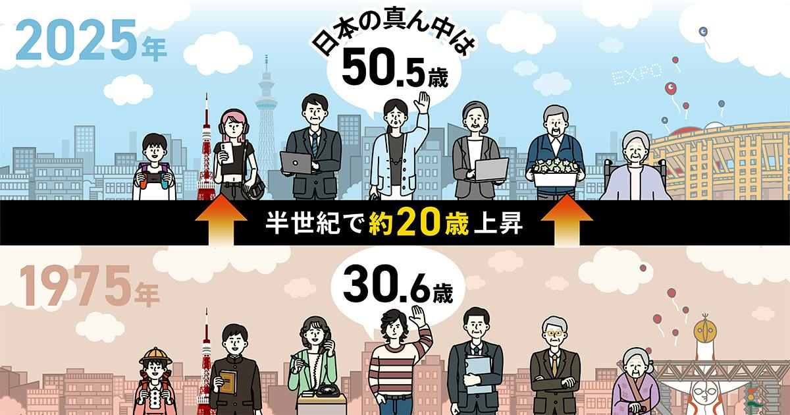
日本は「50歳真ん中社会」 人口の過半が50代以上、変わる暮らし
渡辺浩弐さんがリポスト
【配信まであと3日】
『AI動画最前線』発売記念
W黒川セミナー第2回
「インタラクティブ映画の世界」
11月5日(木)19:00〜
YouTubeで生配信
AIは道具か、悪魔か？
最初の問いは
渡辺浩弐の最新作『AI家族』から。
https://
youtube.com/live/2eR9yNmX9
M8
…
#AI動画最前線
#渡辺浩弐
#黒川文雄
#KUROKAWAxKUROKAWA

とりしま (Sub I/O)さんがリポスト
JR東、宇都宮駅エスカレーターの廃止撤回 市長や県が再考要望
https://
mainichi.jp/articles/20261
102/k00/00m/310/092000c
…
エスカレーターの撤去工事が開始された翌日、定例記者会見で市長は「エスカレーターの廃止は市民のニーズに合わない」などと述べ、県と共同で、JR東日本に対し、廃止方針の再検討を申し入れたと明かしました。
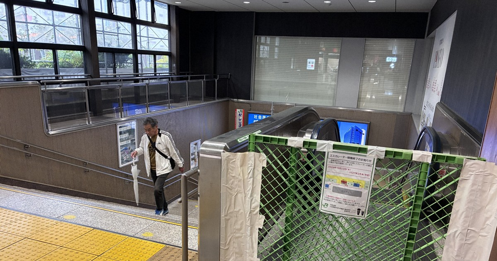
JR東、宇都宮駅エスカレーターの廃止撤回 市長や県が再考要望
テスラさんがリポスト
コラボ嬉しいみくるは絶対にマイメロディだと踏んでいたのに小泉おのれ。でもピアノちゃんの髪飾り可愛いハルヒと有希は想像通りでキョンと小泉は意外性がありました誰かハンギョドンやってほしかったな。やるなら谷口しかないか。

涼宮ハルヒの公式
@haruhi_official
／
涼宮ハルヒ×サンリオキャラクターズ
＼
このたび、サンリオキャラクターズとのコラボ商品の発売が決まりました！
コラボレーションビジュアルを公開します！
発売日などの続報もお見逃しなく
#サンリオ #涼宮ハルヒ
ふしあな
「アレクサ、いい写真を選んで」。AmazonのAIフォトフレームが写真がさらに楽しくなる
「アレクサ、いい写真を選んで」。AmazonのAIフォトフレームが写真がさらに楽しくなる | ギズモード・ジャパン
「フォートナイト」に“麦わらの一味”が参戦！ 「ONE PIECE」をはじめ，さまざまなコラボキャラが登場するミニシーズンが開幕
https://
4gamer.net/s/G014484.2611
02008
…
「フォートナイト」のキャラが出演するアニメーション映像も公開

ヘアセットとか怖くて無理
ゴスロリの5種盛り
(寿司屋で5種盛りを見かけて連想)
【無料】もし流行作『80億分の1』で死んだあとに異世界転生できたら？非公式ファン作品『80億分の、2回目』公開中―古竜や看板猫、剣の刺さった岩にも転生
https://
gamespark.jp/article/2026/1
1/02/174381.html?utm_source=twitter&utm_medium=social&utm_content=tweet
…
古竜や不死鳥、宿屋の看板猫まで、転生先は24種類。本家『80億分の1』の結果を引き継ぎ、冒険することもできます。


ジョン・ロメロ氏の新作FPS，新たなパブリッシャと契約成立。Microsoftの資金提供打ち切りを経て，小規模チームで開発継続
https://
4gamer.net/s/G999901.2611
02009
…
2025年の資金提供打ち切りで，開発チームは110人から5人に縮小。元スタッフ10人を再雇用し，元の開発資産を生かした新作FPSを15〜16人規模で制作中

少し仮眠してから桜木町へ移動
本当は孤独のグルメで紹介されたキッチン・カフェばるに行くはずが明日まで臨時休業
仕方がないので、画像にあるこちらのお店へ
すごい煮干しラーメンと鮨というなかなかないセットを頼む
どちらも美味い!!!
お昼にいいご飯をいただきました!!!
#トゲトゲラーメン部
スクリーンで劇場版バトルフェスの予告観たいんですけどなに観たら観られるんだよ〜！？アニメか？！アニメだろうな…しかもキッズ向けじゃなさそうなアニメ。
らびらびとぅやーやー（熱唱）
おいグロテスクの上映イオンシネマ八王子滝山ないやんけ！！！！調布行くか〜。
なるせひろのりさんがリポスト
「名越スタジオ」が解散へ。11月2日発行の官報によって判明
https://
news.denfaminicogamer.jp/news/261102p
10月31日付の株主総会にて解散したことが報告。『龍が如く』を生んだ名越稔洋氏の開発スタジオで、『Gang of Dragon』の開発を進めていた

地理探索SLG「パパさ、旅系インフルエンサーで食っていこうと思っているんだ。」，体験版をSteamで公開中
https://
4gamer.net/s/G105476.2611
02003
…
・仕事を失った父と大学を休学した娘が世界を巡る
・ただの旅人ではなく，多くのフォロワーが見守るインフルエンサー
・限られた資金で世界を旅しなければならない

とりしま (Sub I/O)さんがリポスト
日本一ロングではないロングシートは絶対これ


えいろく
@Eiroku6101
日本一ロングなロングシートは多分これ
横浜ブルクのマングーIMAX上映の時に予告観たグロテスクってアニメ映画、アイマスアニメでお馴染みの錦織監督なんですね。予告の感じだと短編映画3本立てなのかな？タイトルに偽りなしのPG12なのでウ～ンて思ったけど錦織監督なら観に行こうかな。
社会保障費は全額消費税でやればいい
決算額が増えてきたら消費税率を上げる
全員で等しく広く負担して、誰も他人事にはしない
生活保護が増えればみんなの消費税が上がる
みんなが社会を支えていることが直感的に分かって良かろう
生活保護世帯すら負担できるのだから税金泥棒だけではなくなる
せもしろう
@toma2taimu
社会保障は大事なものだ。
税や給付や国債は同列に大事なものだ。
それだけの話し。100年後も同じ話で富裕層と貧困層は争ってるよ。「勉強不足だ」と言ってる本人が勉強不足なんだから誰も触りたがらない。皆そんな人物を相手するほど暇じゃない。
Torishima / INTPさんがリポスト
文字起こし精度の改善という観点では重複発話をそれぞれちゃんと文字起こしできるようになるTarget Speaker Extractionのほうが効能は強めかと思います。
まさかの「内容量1個」
クレーンゲームで取った「果汁グミ」→思わずのけぞる中身に「どんな確率？」「ドカ笑い」
https://
nlab.itmedia.co.jp/cont/articles/
4071754/
…

気になるメモ
山田胡瓜・漫画家
@kyuukanba
【新連載開始＆公開のお知らせ】
本日からコミックDAYSで
「七分の一のサバイバー」の連載がスタートします！
あくまでフィクションではありますが、首都直下地震という「いつか来るその時」を、自分の能力の限りを尽くして描いています！
ぜひ読んでください！！！
「七分の一のサバイバー」-
注意メモ
日本経済新聞 電子版（日経電子版）
@nikkei
デザイナーの8割弱、AIを毎日利用 「キャリアに不安」半数超す
https://
nikkei.com/article/DGXZQO
UC190BB0Z11C26A0000000/?n_cid=SNSTW005&n_tw=1793572807
…
「関われなかった領域に裁量を持て、楽しさを感じる」といった前向きな反応の一方で、「専門性・強みが分からなくなった」という声も上がりました。
スターウォーズの食べ物より青いんだよナー…一回くらいは食べてみたいっすね。
ニコニコレンタカー、免許証画像の事前登録を廃止 保存済み画像も全削除 サイバー攻撃の増加受け
ニコニコレンタカー、免許証画像の事前登録を廃止 保存済み画像も全削除 サイバー攻撃の増加受け
SBIHDの純利益が過去最高 4〜9月39％増、投資事業好調で
決算:SBIHDの純利益が過去最高 4〜9月39％増、投資事業好調で
軍手さんがリポスト
同人誌即売会に年20回サークル参加することは、年内の半分近い週末で土日のどっちかが1日つぶれるということです
【連邦更新】
永遠の名機「PCエンジン スーパーグラフィックス」に、まさかの初代『魔界村』が登場!!
本作は海外の開発者による非公式移植プロジェクトで、現在は2ステージを遊べる開発途中のデモ版が公開中。
しかも実機でもプレイ可能ってのが、マジで最高なンだッッ!!
https://
renpou.com
シャッターの4秒前から撮ってます。新型チェキ「instax mini Evo 2」のすごい進化
シャッターの4秒前から撮ってます。新型チェキ「instax mini Evo 2」のすごい進化 | ギズモード・ジャパン
ライトノベルの壊滅とはこれのことだと思う。ライトノベルがライトノベルの顔つきをして売るのをやめただけで、滅びてるわけじゃない。

やまぴ
@yamamori_p03
自分が好きだったラノベが13年越しに魔改造されててワロタ
9年間開陳してたってことか……
ITmedia NEWS
@itmedia_news
ロゴ画像用の公開領域に顧客ファイルも保存 GMO系シングルサインオン、4.5万人分漏えい
https://
itmedia.co.jp/news/article/2
611/02/2000002780/
…
古賀朋絵さん。改札前にいます。 (@ Katase-Enoshima Station (OE16) (片瀬江ノ島駅) in 藤沢市, 神奈川県)
https://
app.foursquare.com/share/checkin/
6ae7ff0f342fbf564556c7bd?s=8-V2REmqwrKYib7K9R4ZqVTdVsU&lang=ja
…
Vtuberの中の人 最悪すぎるカミングアウトをしてしまう

Vtuberの中の人 最悪すぎるカミングアウトをしてしまう : ハムスター速報
ポン☆潤々さんがリポスト
デザイン審査が完了しました！
劇場版バトルフェス応援広告
イオンシネマ で掲載予定の
2種の広告デザインが承認されました！
千葉(左)｜11/20(金)～11/26(木)
埼玉(右)｜11/27(金)～12/3(木)
進捗率は87% 残14口！
ご参加は【11/11(水)中】まで受付中です
https://
sakaseru.jp/mina/event/2cb
cbf1805f4148d15ce8dc658d573cb
…

ソウルライクじゃない『Phantom Blade Zero』発売から72時間で400万本を突破！中国で大ヒットしSteam最大同接は83万人超え
https://
gamespark.jp/article/2026/1
1/02/174380.html?utm_source=twitter&utm_medium=social&utm_content=tweet
…
Steam版のプレイヤーの約8割が中国からと推定されています。

アンケート＆プレゼントキャンペーン実施中
完結記念
『スライム倒して300年、知らないうちにレベルMAXになってました』サイン本を抽選で5名様に！
表紙イラスト人気投票も実施中！
応募はこちらのポストから
ポン☆潤々さんがリポスト
当館で現在決まっている上映終了予定作品のご案内です m(_ _)m
11/2(月)
『ハート・オブ・ビースト』
『ルックバック』
『白鳥とコウモリ』
11/5(木)
『超かぐや姫！』
『ストリートファイター／ザ・ムービー』字幕版(吹替版は継続)
11/12(木)
『ディスクロージャー・デイ』
『愛し合ってるかい？
さらに表示 (元の投稿を開く)
「プロジェクトセカイ」の日常を描いた
4コママンガを公開
第386話「同志？との語らい」
#プロセカ #セカイの4コマ
「Phantom Blade Zero」，発売からわずか72時間で販売本数400万本を突破。メタスコアは88点，Steamでは約4万8000件のユーザーレビューで「非常に好評」の評価を得ている
https://
4gamer.net/s/G070944.2611
02007
…
プレイヤーからのフィードバックは把握しており，近日中にアップデートパッチを配信する予定だ

名越スタジオ，解散。2026年10月31日の株主総会の決議により
https://
4gamer.net/s/G096890.2611
02005
…

わざわざ遠くからこれ見にきたのに…
楽天証券、顧客情報362件が漏えいか NTTデータ委託先に不正アクセス
楽天証券、顧客情報362件が漏えいか NTTデータ委託先に不正アクセス
日経平均午前195円安 キオクシア急落でも売り波及は回避
日経平均午前195円安 キオクシア急落でも売り波及は回避
ポン☆潤々さんがリポスト
プロデューサーの皆さんへ
【315超速報】
でらます参加の事業者さんたちから
メッセージが届いております
でらます特設サイト
https://
mwt.co.jp/kokunai/chubu/
special/sidem2026/
…
#でらます #でらますエム #SideM
でらます×アイドルマスター SideM2026｜名鉄観光
とりしま (Sub I/O)さんがリポスト
シネマシティ週末動員ランキング
2026年10月30日(金)〜10月31日(日)
1位『超かぐや姫！』↑
2位『ガールズ＆パンツァー 最終章 第5話』→
3位『劇場シリーズ【第1部】メイドインアビス 目覚める神秘』↓
4位『クレイフェイス』NEW
5位『汝、星のごとく』↓
さらに表示 (元の投稿を開く)

【ログインでクォーツ＆ライフストーンをGET！】
ハロウィン ログインボーナス 第二弾開催中！
期間中10日間ログインで、最大で1000クォーツとライフストーン×30をGET！
▼開催期間
11月13日3:59まで
#ヘブバン

アラブX民「そのうちヨーロッパはイスラム教の国になる」→日本X民の“最悪の指摘”が世界中に拡散ｗｗｗｗｗｗｗｗｗ21万いいね突破ｗｗｗｗｗｗｗｗｗ #政治
アラブX民「そのうちヨーロッパはイスラム教の国になる」→日本X民の“最悪の指摘”が世界中に拡散ｗｗｗｗｗｗｗｗｗ21万いいね突破ｗｗｗｗｗｗｗｗｗ - オレ的ゲーム速報@刃の記事ページ
jin115.com
良い時代だったな……
車から出てきた“16年前のマックのチラシ”→目を疑う内容に「今じゃありえんな」「こんなの毎日買うよ」
https://
nlab.itmedia.co.jp/cont/articles/
4063734/
…
「続ポートピア連続殺人事件:忘却の埋葬」の第1弾キャストが発表。真野康彦（ヤス）役は前野智昭さんが担当
https://
4gamer.net/s/G104110.2610
31006
…
ヤスこと真野康彦役を務めるのは前野智昭さん。今後も新たな登場人物やキャストが発表される予定だ

ポン☆潤々さんがリポスト
【速報】僕らのダイドー、鍋の〆をそのまま缶スープにした驚愕の商品を新発売
・もちろん米入り
・味は2種類（ごま豆乳、ほたてと蛤の貝だし）
・コラボしたのはあのミツカン
・ほっと身体があたたまるのはもちろん、米入りなので小腹も満たせる優れもの
完全新作乙女ゲーム「枷檻累々―うら黄泉照らす鬼灯夜―」，2027年に発売決定
https://
4gamer.net/s/G105426.2610
29045
…
・イラストレーターはカズキヨネ氏
・キャッチコピーは「すべては、失った命から始まった――」
・美しくも儚い和風ダークファンタジーの世界観と濃密なドラマを描く
テスラさんがリポスト
野鳥撮影って、特別な装備で秘境に行って、珍しい鳥を撮るもの。そんなイメージがあると思います。
さらに表示 (元の投稿を開く)
ポン☆潤々さんがリポスト
応援広告掲出のお知らせ
315プロダクション所属・彩 猫柳キリオさんのお誕生日を記念して、応援広告を掲出いたします！
11/2(月) ～ 11/15(日)
JR高崎駅
詳細は画像をご確認ください。
#SideM応援広告 #アイマス応援広告
#猫柳キリオBD2026
とりしま (Sub I/O)さんがリポスト

川口"k-shi"貴志 / ゲームの音響や触覚でUXを考える人さんがリポスト
#デジゲー博 に出展しまス！
【展示】
・サウンドミドルウェア「CRI ADX LE」
・2Dアニメーション作成ツール「OPTPiX SpriteStudio」
ADX LEの最新サンプルプロジェクトやSSの「Godot Engine」向け、「ティラノスクリプト」「ティラノビルダー」向けプレイヤーの先行展示を予定していまス
ポン☆潤々さんがリポスト
＼青すぎる／
11/3(火)新発売
#幸せを運ぶ青いチーズケーキ
驚きの青さ
味は本格的なチーズケーキ
北海道産クリームチーズ使用
し(4)あわせにかけて全4種類のパッケージ
SNSで話題となった漆黒のチーズケーキから初のシリーズ展開です

『プチプラネット』・Game*Spark プレゼントキャンペーン
『プチプラネット』12/4リリース＆Nintendo Switch 2版2027年発売決定記念！
プレゼント
・Nintendo Switch 2 ……抽選で1名様
・ニンテンドープリペイドカード（1万円分）……抽選で4名様
応募方法
さらに表示 (元の投稿を開く)
渡辺浩弐さんがリポスト
【宮代あきらの情報 ※11/2更新】
～ 主催ライブ ～
■11/14(土)18時開演
『秋葉原怪談』の販売ページは
https://
livepocket.jp/e/vv49f
■12/6(日)14時開演
『すごい怪談会』の販売ページは
https://
livepocket.jp/e/iwggd
■予定 1/16(土)夜、1/22(金)夜
～ 出演 ～
●11/8(日)17:30 船橋
さらに表示 (元の投稿を開く)


Torishima / INTPさんがリポスト
「特務機関NERV防災ライブ」、YouTubeで24時間配信を開始
※動画には過去の災害データが含まれるため、苦手な方はご視聴をお控えください。
ライブ配信URL→
https://
youtube.com/@UN_NERV/live
プレスリリース→
https://
gehirn.co.jp/news/2026-11-0
2/nerv-live/
…
【劇場上映に関するご案内（再掲）】
現在上映中の全劇場における上映
✧11/5(木)に全劇場が終映します。
✧「HELLO! MOVIE」提供を終了します。
4DX / ULTRA 4DX アンコール上映
✧11/6(金)-12(木)の1週間限定です。
✧上映期間の延長はございません。
さらに表示 (元の投稿を開く)

初代PS版『テイルズ オブ デスティニー』発売29年目にして「リリス」が通常プレイで仲間入りすることが判明。しかしその条件は複雑怪奇、仲間にすると進行不能に
https://
gamespark.jp/article/2026/1
1/02/174378.html?utm_source=twitter&utm_medium=social&utm_content=tweet
…

お知らせ
11月8日(日)21:00〜
Replive配信をします
カードも募集します！
通常配信は最終回となりますゆえ……お時間合う方ぜひ遊びにきてください
これはのぞく人

今日はJPXの見学に来たよー！
ちょうど上場セレモニーが開催中で特別仕様の表示も見れた！


とりしま (Sub I/O)さんがリポスト
シネマシティ、鑑賞終了。
良かった。あまりに良かった...！
復活早々の回は初めてのDolby Atmosに驚き、ただ今までと違う印象だけが残ってた…
でも数々の劇場を経た今日、Dolby Atmosの爽快感や疾走感に胸が躍り、極音の音圧や歌声に心が揺れた。
聖地の名は、伊達じゃない。
#超かぐや姫復活上映
なるせひろのりさんがリポスト
【盗まれた高級腕時計 宅配便で返却】
盗まれた高級腕時計 宅配便で返却 - Yahoo!ニュース
流石に笑いしし者
「サクラ大戦30周年記念オーケストラコンサート」，2027年2月7日に開催決定
https://
4gamer.net/s/G999108.2611
02004
…
・会場は文京シビックホール 大ホール
・「サクラ大戦」シリーズの楽曲を手掛けた作曲家・田中公平氏が音楽総合監修を務める
・オーケストラとバンドによる演奏で数々の名曲を楽しめる

なるせひろのりさんがリポスト
【速報】東京・中野で盗まれた高級時計、店舗に戻る

【速報】東京・中野で盗まれた高級時計、店舗に戻る
部屋が狭いなら壁を使え。無印良品の収納棚でレベルが上がった
部屋が狭いなら壁を使え。無印良品の収納棚でレベルが上がった | ギズモード・ジャパン
テスラさんがリポスト
#いいふたりの日
#しかのこのこのここしたんたん

新型iPad mini、5分しか触ってないのに一番欲しくなった。持ちやすさが決め手
新型iPad mini、5分しか触ってないのに一番欲しくなった。持ちやすさが決め手 | ギズモード・ジャパン
名越スタジオが正式に解散―10月31日の株主総会で決議、官報に公告。マ・ドンソク主演『GANG OF DRAGON』発表から1年足らずで
https://
gamespark.jp/article/2026/1
1/02/174377.html?utm_source=twitter&utm_medium=social&utm_content=tweet
…
おはようございます！月曜日！
一気に寒くなってきて、早めに衣替えしておきたいですね…！
11月もよろしくお願いしまーーす！
おはようございます！月曜日！
何着て良いかわからない期間に入りました……！！
11月もよろしくお願いします
これはさかな
輿水畏子さんがリポスト
CM出演
日本マクドナルド株式会社様のCM
『チーチー「みんなでルナチー」篇』に
参加させていただきしし者†
色々な十字架からは
Vo.tink / Gt.kikato / Ba.misujiの3人がルナチーの一員になりしし者†
憧れの大先輩LUNA
さらに表示 (元の投稿を開く)


マクドナルド
@McDonaldsJapan
LUNA SEAが大好きな100人と一緒に
「みんなでルナチー」完全版
Torishima / INTPさんがリポスト
私も同じ印象です。ASRは雑音込みで学習していますから、手がかりを奪うだけになりがちかと。
重複発話もこちらはREAL-TSEをCore MLで重複部分だけ実時間の1/10くらいで回していますが、それでも抽出後にApple純正は迷わないのにWhisperは迷うことがあり、使いどころの見極めが大事だなと。
とりしま (Sub I/O)さんがリポスト
#T・ジョイ蘇我 での上映も今週木曜までとなります
のこりわずかとはなってしまいますが、
皆さまのご来場、心よりお待ちしております
#超かぐや姫
『超かぐや姫！』公式＠映画 復活上映中！
@Cho_KaguyaHime
【劇場上映に関するご案内（再掲）】
11月5日(木)に終了すること
✧現在上映中の全劇場における上映 ※4DX / ULTRA 4DXを除く
✧「HELLO! MOVIE」の提供
11月6日(金)よりスタート
✧新たな劇場にてセカンドラン上映 ※通常版のみ
✧1週間限定 4DX / ULTRA 4DX アンコール上映
最後まで
X民「よし、○ぬぞーーー電車が止まって迷惑した人はごめんなさい」→結果・・・・・・・・・・・・・・・・・・ #酷い話・事件
X民「よし、○ぬぞーーー電車が止まって迷惑した人はごめんなさい」→結果・・・・・・・・・・・・・・・・・・ - オレ的ゲーム速報@刃の記事ページ
jin115.com
Haruhiko Okumuraさんがリポスト
先週水曜以来ずっとメンテナンス中で閉じたままの情報学広場．
そもそもこれのベースになってるJAIRO Cloudがシステムメンテナンスという名目で止まってるらしく，JAIRO Cloudを利用している全国の大学のリポジトリがことごとくサービス停止状態に追い込まれてる．
会員機関 | オープンアクセスリポジトリ推進協会（JPCOAR）
なるせひろのりさんがリポスト
ちょっとどういう事？？？geekさん〜！？
Torishima / INTPさんがリポスト
「なんか最近GrokBotの容量がすぐ尽きるぞ！」というツイに対してイーロンが「GrokBotは運用コストがメチャクチャかかって持続不可能でした」との事。うん、あのスペックのVM用意するだけで月数千円かかるよね。イーロンでさえ降参ならタダでバラ撒いてるMuseはどうなる！？
Elon Musk
@elonmusk
Grok Botの運用コストは、収益に対して持続不可能なほど高かった。
姫路紗良さん。パフェ持ってるけど飲食フロアではなく5階エレベーター前です #青ブタ (@ Odakyu Shonan Gate (ODAKYU湘南GATE) in 藤沢市, 神奈川県)
https://
app.foursquare.com/share/checkin/
6ae7f355342fbf56452720cc?s=33eCsYdSaWF1WK0SPgnxQ5S99rE&lang=ja
…
日本が金正恩氏に刻んだトラウマ 高市首相、危うい「トランプ任せ」
日本が金正恩氏に刻んだトラウマ 高市首相、危うい「トランプ任せ」
【令和の就職戦線】日本企業「大卒文系いらないです 理工系だけ雇います」高卒と大卒を同じ初任給にする企業も出現しAIにギュられ始める
【令和の就職戦線】日本企業「大卒文系いらないです 理工系だけ雇います」高卒と大卒を同じ初任給にする企業も出現しAIにギュられ始める : ハムスター速報
パナソニック社長、家電量販店は「仲間」 ニーズ多様化でPBと共存
パナソニック社長、家電量販店は「仲間」 ニーズ多様化でPBと共存
とりあえず善は急げということで、大阪に両日申し込みました。
ただ私には不吉なジンクスが…
それは結束バンドのライブチケット抽選のくじ運が悪すぎること
現京王アリーナの時は3回やって3回全て外している程相性が悪い
今回も倍率は高そうだが果たして…？
#ぼっち・ざ・ろっく
#結束バンド

アニメ「ぼっち・ざ・ろっく！」公式
@BTR_anime
━━━━━━━━━━━━━━━
#結束バンド
ASIA TOUR 2027 “To Asia.”
ツアービジュアル解禁
━━━━━━━━━━━━━━━
▼日程・会場
2027.3.13(土)/14(日) 大阪
2027.5.8(土) ソウル
2027.5.22(土) 香港
▼出演
#青山吉能 #鈴代紗弓 #水野朔 #長谷川育美
スゴイディテールの社会問題も大事かもしれんが、ディテールすぎるものの前に、公共空間のゴミ箱を増やすとかをやってほしい
『エースコンバット8』延期されていたアプデが本日11月2日15時に配信へ―「ラドーン」「影22部隊」の調整や進行不能バグ解消などを予定
https://
gamespark.jp/article/2026/1
1/02/174376.html?utm_source=twitter&utm_medium=social&utm_content=tweet
…
延期されていたVer.1.01.002アップデートのスケジュールが案内されました。
HoYoverseの新作スローライフゲーム「プチプラネット」，Switch2版が2027年に登場
https://
4gamer.net/s/G105475.2611
02002
…
・PC / iOS / Android版は12月4日に配信
・事前登録者数は1000万人を突破
・ログインボーナスに加え，無料で獲得できる家具・コーデアイテムを1000点以上用意
Dotsで何となく何でも思いついたことを話して聞ける働かせられる環境が便利だが、外でそれをやるわけにはいかず。
出社する利点を自宅からのリモートで得たい。出社の利点って何だ？ロボを席に置くか？？
ポン☆潤々さんがリポスト
【緊急メンテナンスのお知らせ】
昨日よりALL․Netの緊急メンテナンスが実施されています。メンテナンス中はオンラインでのゲームモードをプレイできません。
各種コンテンツの再開状況は、あらためてお知らせいたします。
お客様にはご迷惑をおかけし、申し訳ございません。
#ツアマス
ALL.Netサービス情報
@allnet_info
【緊急】【ALL․Net、Aimeメンテナンス中】
不正アクセスへの対応のため、本日 15:00 より、ALL․NetおよびAimeの各種サービスを停止しております。終了時刻は未定です。
メンテ中は、Aimeを使用したゲームプレイやオンラインコンテンツ等をご利用いただけません。
ご理解のほどお願いいたします。
計算する恒星...
計算する惑星...
人生、宇宙、すべての答え...
宇田
@41_36_22
GPUを回して暖を取る話をするたびに、宇宙に存在する莫大な量の水素を全部燃料にしてただアチアチに光ってるだけの恒星とかいうアホカスのことが許せなくなってくる 計算しろ
明日仕事だからと早めに寝たおかげでランキング10位から溢れて泣いた朝
米中間選挙の恣意的な選挙区割り、思惑外れの可能性 9州が実施
米中間選挙の恣意的な選挙区割り、思惑外れの可能性 9州が実施
Torishima / INTPさんがリポスト
絵はどうやったら上手くなるかって？
……まぁ、身も蓋もない事言うと、どう「面倒くさい」を克服するかじゃないかなぁ。
特に「上手くなりたい！」とか言っている人の前に聳え立つのがこの「面倒くさいの壁」なんですよ。
さらに表示 (元の投稿を開く)
北朝鮮経済、中朝ロ供給網で3%成長 国連制裁前の水準上回る
北朝鮮経済、中朝ロ供給網で3%成長 国連制裁前の水準上回る
Haruhiko Okumuraさんがリポスト
「幻覚（ハルシネーション）」と「誤り」は違うのだけど、誤りのことをハルシネーションと言ってしまう人も出ているのではないか。元の意味のハルシネーションはもうGeminiでしか起きないですよね。
Haruhiko Okumura
@h_okumura
Gemini 4 Argon、Opus 5.5やGPT-6.1 Solの見逃しを指摘してくれるので助かっているが、とんちんかんなこともある。さっき教えてくれた本が見つからないので確認したら「大変失礼いたしました。私のハルシネーション（架空の書誌情報の合成）でした。お詫びして訂正いたします。」だって
ワールド子会社に不正アクセス、会員情報のべ約120万件が流出の可能性 「RAGTAG」運営元
ワールド子会社に不正アクセス、会員情報のべ約120万件が流出の可能性 「RAGTAG」運営元
日常に溶け込んでる感じがいい
つば二郎@きいちゃんすこすこ侍さんがリポスト
なんと！
今日のNHKあさイチで博多大吉さんが昨日のモリザベスのライブに来てくれていた事を言ってたとの事！
しかも生まれて初めてチケットを買って来てくれてたみたいで、とても嬉しいっす！
【大論争】エリートたち「移民反対派に話が通じない理由は○○な人が多いから」 #炎上
【大論争】エリートたち「移民反対派に話が通じない理由は○○な人が多いから」 - オレ的ゲーム速報@刃の記事ページ
jin115.com
デザイナーの8割弱、AIを毎日利用 「キャリアに不安」半数超す
https://
nikkei.com/article/DGXZQO
UC190BB0Z11C26A0000000/?n_cid=SNSTW005&n_tw=1793572807
…
「関われなかった領域に裁量を持て、楽しさを感じる」といった前向きな反応の一方で、「専門性・強みが分からなくなった」という声も上がりました。

デザイナーの78.8%、AIを毎日利用 キャリアに不安50.9%
Torishima / INTPさんがリポスト
なんかすごいな。警察そっちのけでGMOは犯人の情報に1.5億円の懸賞金かけて血眼で捜査してるらしい。そんでホワイトハッカーが「犯人はマンションにいる！」とか「犯人、分かっちゃいました」とか言ってたと思ったら今度はGMOが「北朝鮮が犯人かも！」とかちゃぶ台ひっくり返して、そしてこういう状況
さらに表示 (元の投稿を開く)
47NEWS
@47news_official
【速報】GMO不正アクセス、北朝鮮関与か
https://
47news.jp/15170287.html?
utm_source=twitter&utm_medium=social&utm_campaign=api
…
ポン☆潤々さんがリポスト
11/13（金）〜12/25（金）マクセル アクアパーク品川（東京）で「LittleTwinStars AQUARIUM」を開催！
幻想的なクリスマス演出やリトルツインスターズとコラボしたドルフィンパフォーマンス、グッズ販売なども♪
11/12（木）のプレビューデーも要チェック☆
https://
sanrio.lnky.jp/blYwffy
#サンリオ

＼＼＼ ヘブバン×AB!コラボグッズ紹介②／／／
▽アクリルフレームアート
ゆーげんさん描き下ろしキービジュアルが多層アクリルアートに！
▽キャラファインボード
ガルデモ集合の新デザインも登場！
こちらをチェック
https://
wfstore.net/pages/angelbea
ts2026
…
#ヘブバングッズ #おかえりヘブバンAngelBeats
ただiPhone Duoなら120Hzで動く可能性。
今Galaxy Z Fold 7で正方形に近いアスペクト比でまあまあできてはいるが、他を知らなくて全然快適じゃん！ってなる気も
TAガチったりもしてみたいし体験の質的に120Hz捨てがたい
モノレールは花楓ちゃん #青ブタ (@ Shōnan Monorail Ofuna Station (湘南モノレール 大船駅) in 鎌倉市, 神奈川県)
https://
app.foursquare.com/share/checkin/
6ae7ecf1a4536076de709fd8?s=Eus9vYfISZLWaDYjOZXQtTh2hvE&lang=ja
…
ITmedia NEWSさんがリポスト
ChatGPTの「Chat」と「Work」統合へ 利用制限はCodexと共通化
ChatGPTの「Chat」と「Work」統合へ 利用制限はCodexと共通化
クラブツーリズムに不正アクセス 個人情報約432万件漏えいの可能性、サイト停止
クラブツーリズムに不正アクセス 個人情報約432万件漏えいの可能性、サイト停止
10月の長期金利、8カ月ぶり低下 懸念は物価より景気に
10月の長期金利、8カ月ぶり低下 懸念は物価より景気に
エンドスさんがリポスト
ちばてつや先生のアシスタントでもあった川三番地先生の『あしたのジョーに憧れて』を読むと、ちば先生はあえて等角投影図法のような俯瞰の絵で、読者に状況を解りやすく伝えることを、意識されていたようですね。
さらに表示 (元の投稿を開く)

松田未来 新連載「やんごとなきエレバス」COMICリュウライブで連載中！
@macchiMC72
故ちばてつや先生が強かったのがまさに「状況説明のカメラを引いた構図」の巧みさと描写力。のちの漫画全体にも影響を与えていると思えるほど上手い。 x.com/sino6/status/2…
なるせひろのりさんがリポスト
ほんとこれ
良い画像です。是非拡散してください
私は何度でもいいますが、「良いムスリムもいる」で受け入れたらだめなんです
更に言えば、「穏健派イスラム」が日本で数万〜数十万単位になり、彼らの一部が子を産んで、その子達がコミュニティを作ったらどうなるのか？
さらに表示 (元の投稿を開く)
『スーパーマリオブラザーズ』RTA、Any％世界記録が更新！理論値との差はわずか0.034秒（2フレ）の世界に到達。人間の限界へ
https://
gamespark.jp/article/2026/1
1/02/174375.html?utm_source=twitter&utm_medium=social&utm_content=tweet
…
TASによる理論値との差はたった2フレーム（0.034秒）に。
攻めの知財へ「特許の怪物」も使いよう 訴訟恐れぬ日本企業に
攻めの知財へ「特許の怪物」も使いよう 訴訟恐れぬ日本企業に
とりしま (Sub I/O)さんがリポスト
はっぴーハロウィンないろかぐ
いやー間に合った間に合った。
ギリセーフ。

オープンハウスの人事担当「入社2日目から現場、3年下積みでは遅い」
オープンハウスの人事担当「入社2日目から現場、3年下積みでは遅い」
掲出期間に1日間に合わなかった
がるる
@xxtakaxx4649
翔子さんおはようございます
まだ、翔子さんいてくれたので、
「思春期症候群」発症して10/31をループしているのかと勘違いしてしまいました。
今までApple製品は発売日に当日受け取りしていたっぽい。iPhone DuoキャンセルしてiPad mini 8当日受け取り行っちゃうか？
東京エレクトロン株価一時6％高 27年3月期営業益初の1兆円超えへ
東京エレクトロン株価一時6%高 27年3月期の営業益、初の1兆円超えへ
「ミュートになってますよ」オンライン会議でひとり熱弁していたあなたを救いたい
「ミュートになってますよ」オンライン会議でひとり熱弁していたあなたを救いたい | ギズモード・ジャパン
モンハンのためにiPhone Duoポチって届くの待ってるけど、iPad mini 8の方がアスペクト比が横長で快適かも知れない。今ポチると11/6当日に受け取れるのか
パナソニックＨＤ株価が反発 27年3月期の純利益2.8倍に上方修正
パナソニックHD株価が反発 27年3月期の純利益2.8倍に上方修正
軍手さんがリポスト
ぼざろの映画！？
誰が選挙に出て、誰が無職歳上彼氏を同棲扶養するんだ？ #まさに極悪
本投稿につきまして、設定の不備によりイベント開催時に投稿ができておりませんでした。
ご迷惑をおかけしましたこと、お詫び申し上げます。
#プロセカ
プロジェクトセカイ カラフルステージ！ feat. 初音ミク【プロセカ】
@pj_sekai
MEIKO HAPPY ANNIVERSARY2026
イベント開催
記念日までにマイセカイで会場を飾り付けるとパーティーを開催できます
また、イベントのプレイやマイセカイ百景入選で限定称号が獲得できます
※限定称号は再登場する可能性があります
※詳細はお知らせをご確認ください
#プロセカ
MEIKO HAPPY ANNIVERSARY2026
イベント開催
記念日までにマイセカイで会場を飾り付けるとパーティーを開催できます
また、イベントのプレイやマイセカイ百景入選で限定称号が獲得できます
※限定称号は再登場する可能性があります
※詳細はお知らせをご確認ください
#プロセカ
藤沢駅の公衆電話、もうないのか…
なるせひろのりさんがリポスト
ロゴ画像用の公開領域に顧客ファイルも保存 GMO系シングルサインオン、4.5万人分漏えい
ロゴ画像用の公開領域に顧客ファイルも保存 GMO系シングルサインオン、4.5万人分漏えい
うみゆき@AI研究さんがリポスト
「ChatGPT Plus プラン、コーディング目的ではなんもできん」という話を聞いて自分とかなり印象違うな〜と思って調べてたんだけど、どうも5hレートリミットの有無が関係してるっぽい
Plusプランなのに 5h 制限ないのってもしかして自分だけなのだろうか？
Ryu
@_ryu15_
というかPlusプランのCodexじゃコーディング目的だとなんもできんな...
今のCodexに3000円払うならCommandCodeGOATとOpenCodeGoに10ドルずつ契約しておいた方が死ぬほどDeepSeek使えるし
Terraも感触は悪くはないんだけど、それでも5hまでの消費は早いからうーんと言ったところ
どっちがビッカメ娘か、これもうわかんねぇな
なるほど〜 #青ブタ
ピザハット、500円からの低価格ピザ 物価高背景に人気の層厚く
ピザハット、500円からの低価格ピザ 物価高背景に人気の層厚く
過去一気合いが入ってるビッカメの青ブタコーナー (@ Bic Camera (ビックカメラ 藤沢店) in 藤沢市, 神奈川県)
https://
app.foursquare.com/share/checkin/
6ae7e44e877bb746c3210edd?s=sF2e-o5zGJ14Q7tNyc9tPvcSpxk&lang=ja
…
#青ブタ スタンプラリーのチェックポイント、「藤沢駅北口サンパール広場」じゃなくて「ビックカメラ藤沢店入口」って書いてほしかったけど、事情があるんかな
スペイン列車事故、日本人1人の死亡確認 現地当局
スペイン列車事故、日本人1人の死亡確認 現地当局
メモ
4Gamer
@4GamerNews
AI革命にフルベットするEpic Gamesの新戦略とジレンマ
https://
4gamer.net/s/G003691.2610
30033
…
Epic Gamesは生成AIを全面的に活用する「AIファースト」の開発体制へと舵を切っている。一方で，AIを用いた既存ゲームの無断複製問題なども浮上。Epic Gamesが描く未来と，そのジレンマを追う
Haruhiko Okumuraさんがリポスト
私のツイッターフォロワーの方々、
なぜか全員(クソデカ主語) が Markdown のレンダリングエンジンを脳内に搭載してるので、
私も強調したい時とかよく ** を使ってツイートしてた(フォロワーさんは **これ** が自動で太字になって見える)んだけど、
今これやると「AI
さらに表示 (元の投稿を開く)
jun
@jun1228909
単語の両端に付いているこの記号、AIを使った時の痕跡だというのですーー
＜ﾅ､ﾅﾝﾀﾞｯﾃｰ⁈
これすご。こういうの作りたいって思ってるけどどうしても途中で投げてしまう
浅野いにお/Inio Asano
@asano_inio
読み切り漫画を描くために一ヶ月かけて３Dで田舎の町を作ってました。原稿はまだ１ページも出来てません！
災害対応の司令塔「防災庁」発足 省庁・自治体連携、技術育成も担う
災害対応の司令塔「防災庁」発足 省庁・自治体連携、技術育成も担う
今日は青ブタスタンプラリーを回ります（カット回収はあまりしません）
なるせひろのりさんがリポスト
彼女は本当にその飛行機を自分のものだと考えていた…
元人気セクシー女優さん、香港でヤバイことになっていた・・・ #酷い話・事件
元人気セクシー女優さん、香港でヤバイことになっていた・・・ - オレ的ゲーム速報@刃の記事ページ
jin115.com
Torishima / INTPさんがリポスト
俺は絵にも才能はあるので、全てを努力と根性と工夫で乗り越えることはできないと思ってる
でも描けば必ず上手くなるとも思っている、他人より上手くなるとはいってない
美少女アンドロイドのお腹をパカッと開けて修理！フェチなアンドロイド娘ADV『D1AL-ogue』続編の修理アニメまとめが一生見てられる。メインストーリーは完成と報告
https://
gamespark.jp/article/2026/1
1/02/174374.html?utm_source=twitter&utm_medium=social&utm_content=tweet
…
クラファンの実施と、ストアページの公開が待ち遠しい！それまでは修理アニメーションを見ておきましょう。
小倉駅、ホームにかしわうどんと豚骨ラーメンの店があるの地域色あって良かった。川崎もホームにニュータンタン出そう。
輿水畏子さんがリポスト
もとは1枚 対称のため雨が変


こゆき
@koyuki12270321
#まのさば二次創作
ヒロエマ
※追記
こちら現在は意識も回復済みで、快方に向かっているとのことです
ブルーインパルス来てるのね
ウクライナ南部の局地停戦終了 異例の成立、ロシアは米との取引意識
ウクライナ南部の局地停戦終了 異例の成立、ロシアは米との取引意識
しらす食べ放題の東横イン
そりゃそうや。
電ファミニコゲーマー
@denfaminicogame
AI開発ツール「Claude Code」他者が制作した“既存ゲームの再現”を禁止するルールを追加。オリジナル作品の制作は引き続き認める方針
https://
news.denfaminicogamer.jp/news/261102c
同ツールによる知的財産権の侵害を防ぐための変更。同じジャンルのゲームや、自作のデザイン・素材を使ったゲーム制作には今後も利用可能
子供を配信して稼ぐ家族系Youtuber達 収益化停止
子供を配信して稼ぐ家族系Youtuber達 収益化停止 : ハムスター速報
hamusoku.com
テスラさんがリポスト
映画化おめでとうございます
日本経済新聞 電子版（日経電子版）さんがリポスト
キオクシア株が大幅続落 10〜12月期の業績予想に失望売り
決算:キオクシア株が大幅続落 10〜12月期の業績予想に失望売り
サム氏そんなに怖いか？グラボとメモリ買いに殺到するローカルLLMオタクが…
ローカルLLMやりたくてグラボ買う人がそんなにいたとは…
やかもち＠ちもろぐ
@Yacamochi_db
ここ1ヶ月で普通のグラボ（VRAM 12～16GB）が一気に高騰した理由はだいたい「 Strata 」のせい
ヒトって頭がピンクになると財布の紐が緩むらしいです。ガードレールなし、検閲なしでClaude Opus 4.6 (Max) 相当のAIが自宅のゲーミングPCで動くんだよ？
・GPU 0：Strata
・GPU 1：画像生成
2枚必須です x.com/Aile_yukkuri/s…
なるせひろのりさんがリポスト
BRP『スパイダー』174台リコール…速度計が消えたりウインカーが作動しなかったりするおそれ
https://
response.jp/article/2026/1
1/02/418491.html?utm_source=twitter&utm_medium=social&utm_content=tweet
…
#バイク #BRP #リコール
なるせひろのりさんがリポスト
単行本発売したら色紙の抽選プレゼントとかもやります！
輿水畏子さんがリポスト
あなたに私の愛をすべて送ります

「米粒より小さい」カメラ、完成。その用途は“スマートグラスの内側を撮るため”
「米粒より小さい」カメラ、完成。その用途は“スマートグラスの内側を撮るため” | ギズモード・ジャパン
GoogleのAIがメガネの中へ。XREAL AURA、ついに日本で予約スタート
GoogleのAIがメガネの中へ。XREAL AURA、ついに日本で予約スタート | ギズモード・ジャパン
Apple Watch、まさかのiPhone以外のスマホで使えるように！ 機能はまだ限定的
Apple Watch、まさかのiPhone以外のスマホで使えるように！ 機能はまだ限定的 | ギズモード・ジャパン
なるせひろのりさんがリポスト
日立製作所、GPUの冷却電力3割減 新構造コールドプレートで
日立製作所、GPUの冷却電力3割減 新構造コールドプレートで
貝さんさんさんがリポスト
若林信さんと堀口悠紀子さんがコンビを組んだ作品に、ショートアニメシリーズ『22/7 あの日の彼女たち』があります。今でもYouTubeで全話を視聴できます。未見の方はリンク先からどうぞ。

アニプレックスとソニー・ミュージックレコーズがタッグを組み、秋元康が総合プロデュースするデジタル声優アイドル、22/7(ナナブンノニジ...
youtube.com
貝さんさんさんがリポスト
若林信監督/映画ぼっち・ざ・ろっく！ 星のあしあと
スタイリストとして参加いたしました。
ずっとアニメのスタイリングがしたく、夢が叶いました。
しかもぼっち・ざ・ろっく！
バンドのスタイリストとして長年やってきた事、感じた事を若林監督の元、全て込めました。
2027年公開です。

アニメ「ぼっち・ざ・ろっく！」公式
@BTR_anime
◤￣￣￣￣￣￣￣￣￣￣￣￣￣
映画ぼっち・ざ・ろっく！
星のあしあと
ティザービジュアル公開
＿＿＿＿＿＿＿＿＿＿＿＿＿◢
「ぼっち・ざ・ろっく！」前日譚が
2027年に待望の映画化――。
監督・若林信×
キャラクターデザイン・堀口悠紀子×
脚本・吉田恵里香×
日経平均株価、続落で始まる キオクシアに嫌気売り先行
日経平均株価、続落で始まる キオクシアに嫌気売り先行
ヤバい！
EIGHT-JAM【公式】（テレビ朝日系）
@EIGHTJAMtvasahi
次回の #EIGHTJAM は
《即興演奏特集》
バンド界を代表する
日本屈指の凄腕プレイヤー4人組
KATSINA SESSION が
打ち合わせ一切ナシの即興セッション！
二度と同じ曲は聴くことのできない
予測不能なセッションをお見逃しなく！
Google、宇宙のTPUから初のAI応答を受信 「Project Suncatcher」試作衛星で「Gemma 4」が俳句を詠む
Google、宇宙のTPUから初のAI応答を受信 「Project Suncatcher」試作衛星で「Gemma 4」が俳句を詠む
画面共有中のパスワード、自動で隠してくれます。ただしAndroid限定
画面共有中のパスワード、自動で隠してくれます。ただしAndroid限定 | ギズモード・ジャパン
ユニバーサルからポニーキャニオンに移籍したし、またやってもいいと思う
ソニーグループなど出社回帰強まる 影響と注意点がわかる10選
ソニーグループなど出社回帰強まる 影響と注意点がわかる10選
民主主義国家で政策に対して国民が民意を示す手段がパブコメしかない状況で「気にしなくていい～」って無視して一蹴されるならもうフランスみたいに暴動してみせなきゃ分からんのか
うみゆき@AI研究
@umiyuki_ai
うわっ！良くない意味ですごい！内閣府のパブリックコメントに大量爆撃されたアンチAIコメントに対して知財戦略会議では真摯に受け止めるどころか「そういう人たちは5年後クリエイターではないので気にしなくて良いと思います」って言ってみんな同意しちゃって実質嘲笑されて終わった。「新しいテクノ x.com/yamabug/status…
【悲報】女優・平愛梨さん、アンチコメントに反応してしまう→【朗報】メンタル最強すぎた結果ｗｗｗｗｗｗｗｗｗｗｗｗ #芸能・スポーツ
【悲報】女優・平愛梨さん、アンチコメントに反応してしまう→【朗報】メンタル最強すぎた結果ｗｗｗｗｗｗｗｗｗｗｗｗ - オレ的ゲーム速報@刃の記事ページ
jin115.com
本当にこれは不思議。でもああいう被害に遭った生徒たちはしっかりしてるだろうから同志社に進学せず、他に進学するだろうと見ている。一般入試だったら調査書よりも試験の結果が優先されるはずだから。このあたりで学校側からしたら見たくない数字も出てきそう。
まっつん＠バリュー投資
@inves_engineer
同志社国際の何が怖いって、亡くなった武石さんを脇に置いたとしても骨折だったり顔面ズタズタになるレベルのケガした生徒が10人以上他にいるのに他に声を挙げてる保護者の話題が無いこと。
あったといえばカクヨムあたりで告発してた人が何人かいたくらい…
どんな締め付けやってんだよ… x.com/tweetsoku1/sta…
なるせひろのりさんがリポスト
異世界帰りの勇者が現代最強！六巻が１１月６日に発売します！各種特典などもございますのでどうかどうかよろしくお願いいたします！
AI革命にフルベットするEpic Gamesの新戦略とジレンマ
https://
4gamer.net/s/G003691.2610
30033
…
Epic Gamesは生成AIを全面的に活用する「AIファースト」の開発体制へと舵を切っている。一方で，AIを用いた既存ゲームの無断複製問題なども浮上。Epic Gamesが描く未来と，そのジレンマを追う
昨日は本当に良い天皇賞秋でした！
馬券はデサイル複勝一点だったので、無事に大勝ちしました！
そして、戸崎圭太初の天皇賞制覇！！
現地でそれを見てボロボロ泣いてました……！
昨日の日吉ヶ丘でその光景を見た人も居たようで、癖の強い戸崎ファンが居ると少しずつ認知され始めてますねꉂ𐤔
あのトリビュート自体がAmazon Musicの企画みたいな印象なので別にやってほしい気持ちはある。
2022年末はプライムでELLEGARDEN：Lost & Found配信、Strawberry MargaritaのタイアップあってのThe End of Yesterdayの発売だったので、若いリスナーへの普及を狙った感じだったと思う
otäke
@hiatus_h
エルレのトリビュート、収録曲は少ないしフィジカルのアートワークは手抜きっぽいし、かなり力が抜けた作品（個々のアーティストはやる気はあるんだけどプロジェクトとしての熱意という意味で）になってしまっているのが解せない。2回目はないだろうし。
IMAXはスクリーン大きくて綺麗だし音も良くてめっちゃ楽しみにしている大作観るならこれだ！って感じでしたけど、私的にはDolby Atmosの立体音響のほうが物語の一部になっている感じして好きかな〜という感想。まだDolby Atmos1箇所でしか観ていないんでこれから変わる感想な気はする。
日本経済新聞 電子版（日経電子版）さんがリポスト
日本は「50歳真ん中社会」 人口の過半が50代以上、変わる暮らし
日本は「50歳真ん中社会」 人口の過半が50代以上、変わる暮らし
NHKは『花は咲く』を歌うシーンをニュースで使うのと同じで、テレ朝なら他のプリキュアにも声かけていそう。
橘こもも池ハロ3DAYS
@como_cos
テレ朝の『グッド！モーニング』から取材を受けたので、もしかすると初代プリキュアの姿で日曜日の朝に地上波デビューするかも()しれません
#池ハロ2026
とりしま (Sub I/O)さんがリポスト
うぇーい

CINEMA 2（ツー）
1階入ったらしかおらんくて安心できる
とりしま (Sub I/O)
@iotorishima
4ヶ月ぶり？とかにきた というかもう11月て……
深津 貴之 / THE GUILD, noteさんがリポスト
『深津貴之のGuild Talk』が更新されました！
今回のテーマは「法律がAI前提で書かれる日【ゲスト：稲垣有二】」です!
https://
open.spotify.com/episode/4wiPeo
4y1PbWxSI1dcr6vJ
…
#ギルドトーク
@fladdict
OpenAIからチャット使い放題死刑宣告のメールが来ました
日本経済新聞 電子版（日経電子版）さんがリポスト
ソニーグループなど出社回帰強まる 影響と注意点がわかる10選
ソニーグループなど出社回帰強まる 影響と注意点がわかる10選
4ヶ月ぶり？とかにきた というかもう11月て……
また西湘バイパス止まりそう。もちろん直撃よりはいいのだけど。
ウェザーニュース
@wni_jp
【台風情報】
11月2日(月)6時現在、強い台風31号(インファ)は小笠原近海を西進しています。週後半にかけてゆっくりと北上し、小笠原諸島の北西を通過する見込みです。うねりを伴った高波の影響が長引くため注意してください。
東日本も5日(木)頃に前線で雨が強まります。
https://
weathernews.jp/news/202611/02
0051/
…
音が良くても観るのに問題があるのは困るなぁ…。池袋らしいから座席取るとき注意しよう。
なぜEVは「雪国」で敬遠されてきたのか？ 北海道の普及率47位が示す苦境！ 帯広日産のバッテリー保証は中古車の価値を変えられるのか？ | 自動車情報サイト【新車・中古車】 - carview!
普及最下位の北海道が見据える針路北海道における電気自動車（EV）・プラグインハイブリッド車（PHV）の人口あたり普及率は、全国47位と最下位にある。こうした状況を受け、帯広日産自動車（北海道帯広市）は駆動用バッテリーの長期容量保証プロ...
carview.yahoo.co.jp
Haruhiko Okumuraさんがリポスト
検定やなんとか分析よりも、データの要約・可視化による分布の確認が大切ですね
オタク起床
回収！電子版は端末から消えるんだろうか？
朝日新聞出版 お知らせ
@asahi_pub_PR
【回収方針のお知らせとお詫び】
新書『常識なき世界を生き延びるために』（内田樹/望月衣塑子著）の本文中、「日本中学生新聞」の川中だいじ様に関する内容に複数の誤りがあったことを受けて、弊社は本書の出荷・販売中止を決めました。
川中様とご家族、関係のみなさまに深くお詫び申し上げます。
Haruhiko Okumuraさんがリポスト
技術的には可能なのかもしれない
バッテリーはめちゃくちゃ食いそうですけどw
Haruhiko Okumura
@h_okumura
これ補聴器に組み込めないかな x.com/GOROman/status…
これ補聴器に組み込めないかな
NULL=RUN
@GOROman
これMacでも動いたので、みんな試そう。
ボイスレコーダーのファイルとか食わせるとまじでビビるw
火をつけたところから、さだまさしの歌が頭をよぎる。しんみりした歌だけど、題材はねぇ。
kryptonian
@aaryanindd
これらはみんな、子供の頃にやりたいって思ったこと。
マッハ5超える飛行機、早稲田大など開発進む 大陸間移動や宇宙輸送
音速を超える速さで飛ぶ機体の開発が日本で進む。早稲田大学などは実験装置内でマッハ5を超える条件を再現し、エンジンの燃焼などに成功した。日本と米ロサンゼルス間を2時間で結ぶ飛行機や宇宙への輸送での利用が想定されている。超音速飛行機の開発を目指しているのは、早稲田大学の佐藤哲也教授や現東京理科大学教授で実験時は宇宙航空研究開発機構（JAXA）に所属していた田口秀之氏などが中心となって進めるプロジェ
nikkei.com
イーロン・マスク「医学部に行くのは無意味」
イーロン・マスク「医学部に行くのは無意味」 : ハムスター速報
TV見てたら愛媛の80近いペンキ屋社長がクマ撃退ランチャーの開発うまく行かず借金まで背負ったんでさすがに中止したら、クマに襲われた人のニュース見た息子さんに「親父、やっぱり完成させようよ」って励まされて、弾の強度テストで奥さんに自分を撃たせてまで完成させた話やっててちょっと感動した。
全東信の破綻、揺れた飲食店 「ようやく売上金戻ってきた」
全東信の破綻、揺れた飲食店 「ようやく売上金戻ってきた」
【今週のモチベ】リメイク版「ゼルダの伝説 時のオカリナ」が発売される 2026年11月2日〜11月8日
https://
4gamer.net/s/G095479.2610
31009
…
伝説の地オーロリアを舞台とするオープンワールドアクションMMORPG「ArcheAge Chronicles」の早期アクセスもスタート
なるせひろのりさんがリポスト
第55話『ささやか（致命的）なマウント』(1/4)
#さらなみ
なるせひろのりさんがリポスト
【悲報】いらすとや、生成AIのせいでオワコン化……
【悲報】いらすとや、生成AIのせいでオワコン化……
家に帰って、おまたせいつもの朝食ルーティン+α
ユウマボウズ
@Gc5RLsVaaV12052
結局家に帰るのが良いと判断しました。 x.com/Gc5RLsVaaV1205…
なるせひろのりさんがリポスト
アーケードの名作『サンダークロス』が、レトロPC「X68000」に勝手移植!!
こちらの作品は、アーケード版のROMデータから、X68000実機／エミュレーターで起動できるフロッピーディスクイメージ（XDF）を生成する仕組みとなっている。
さらに表示 (元の投稿を開く)
ネタニヤフ氏、トランプ氏に米中間選挙後のイラン攻撃要求か 米報道
ネタニヤフ氏、トランプ氏に米中間選挙後のイラン攻撃要求か 米報道
グリーンシャトルではないんだ…。今となっては都営バスはこの頃の都市新バスになったようなもんだけど。都市新バスは多頻度、エアサス車、ハイバックシート、バスロケだったかなぁ。多頻度とハイバックシート以外は今となれば標準？

28Ｌ新県庁
@noba_shako
今回は、ごく一部で話題になった動画でも。TV朝日のTHE世代感と言うｸｲｽﾞ番組で流れた、1984年の映像内の都ﾊﾞｽ都01系統の部分です。懐かしい映像ですが、正面行灯表示が｢都市新ﾊﾞｽ｣なのが特に貴重ですね。画像を見て若者が感じる違和感は?という出題ですが自分はここが一番違和感でした(笑)
テスラさんがリポスト
神社に時々見られる石積み
祈願の為とは思うけど
見慣れてないと｢賽の河原｣みたいでドキッとする
シネマシティの最大の難点はどうしても小さいのでシートピッチが狭い点なんだよな、CINE8のほうが居住性は断然よい
最近仕事も趣味も常にこれ
にか
@nikachu2012
ワイのプログラミング全部これ
なるせひろのりさんがリポスト
【金型の無償保管 公取委勧告が急増】
金型の無償保管 公取委勧告が急増 - Yahoo!ニュース
映画館で音立ててないかは結構気を使うのだが、長い映画だとずっと同じ姿勢で座るのきつくて足を組みたくなってしまうんだよな
すげえ……！！（支援金の方が賞金よりデカいのか…）

松丸 彗吾(keigo matsumaru)
@k_matsumaru
#HiggsfieldGlobalFilmFestival 結果発表！！
なんと佳作として受賞していました！！！！
賞金1万ドル！！
さらにHiggsfield Talentとかいうクリエイター支援プログラムで追加で4万ドルいただけるそうで
あわせて賞金5万ドル！！
すげーーー！！約800万円！！！ x.com/k_matsumaru/st…
アーケード版『達人王』（Truxton II）のバグを修正するハックロムが登場!!
こちらはオリジナルのアーケード版に存在する、さまざまな不具合を修正する改造パッチで、適用することで次のような問題が解消される。
●スプライト制限によってボスが消えてしまう問題
●敵弾の表示不具合
さらに表示 (元の投稿を開く)

日経平均株価、キオクシアの利益見通しが重荷（先読み株式相場）
日経平均株価、キオクシアの利益見通しが重荷（先読み株式相場）
徳丸 浩さんがリポスト
#radiru #nhkr1 #NHKラジオ
PHPの脆弱性の問題については、PCサポート詐欺でも「ウイルスに感染したのはPHPの脆弱性が問題だからだ。PHPのパッチを購入しろ」とコンビニエンスストアで電子マネーを買わせる詐欺が発生しています。注意喚起をお願いします。
来栖りん、違うだろ！！お前がするべきなのはbioを変えた説明ではなく、黒髪に戻して一生黒髪宣言をすることだろ！！！弱男声豚から逃げるな！！！！ってマックで声優志望のJKが叫んでた
なるせひろのりさんがリポスト
すげーー！これやりたい！！個人でも買えるのかな？！？
SIGNAL SHOWUP Div.
@ShowupDiv
純正の鉄ホイール
KROMA EDGEで簡単メッキ
ホイールの素地を軽くサンディングして
そのままペイント。
ベースを作らなくてもいいので作業効率もUP
ホントに楽で美しい
#showupcolor
#KROMAEDGE
#メッキ塗料
#メッキ塗装
#ホイールペイント
アメリカの世論調査、事前予測とずれる選挙結果 回答率は1％
https://
nikkei.com/article/DGXZQO
GN304BI0Q6A031C2000000/?n_cid=SNSTW005&n_tw=1793505732
…
トランプ氏が登場した2016年以降、ズレが生じました。回答する層も偏りがあり、同氏を支えるキリスト教福音派の回答率は極端に低いといいます。

米世論調査1%の回答率、事前予測とずれる選挙結果 トランプ氏登場後
FBI、Binanceからの60億ドル超の暗号資産窃盗は北朝鮮「TraderTraitor」の犯行と発表

FBI、Binanceからの60億ドル超の暗号資産窃盗は北朝鮮「TraderTraitor」の犯行と発表
遂に無料の「3Dボクセル化 ファミコンエミュレーター」が登場!!
今朝紹介する「Zaxnes」は、ファミコンの2Dゲーム画面をリアルタイムで解析し、背景やキャラクターなどを奥行きのある3D空間に再構築するWindows用エミュレーター。
さらに表示 (元の投稿を開く)
コザというとグルクンマスクさんのジムがあるけど、あれはゲート通りではなくパークアベニューだもんなぁ。 #アップ738
結局家に帰るのが良いと判断しました。
ユウマボウズ
@Gc5RLsVaaV12052
地獄の5連続夜勤終了!!!
頑張りました!!!
ただ会社の仮眠室が空いておらず、家まで戻るべきか悩み中
東京23区内もしくは横浜周辺で仮眠できる場所はあるでしょうか？
誰か教えて下さい
なるせひろのりさんがリポスト
男性「おい ドアパンするな」
ババア「知るか 病院に間に合わなくなるだろ」
↓
男性をボンネットにのせたまま2.2km逃走
あまりに老害すぎる


教育についてはみんな語りたがる。でもその中身が、自分が教育を受けたころの昔話になっちゃってるケースが多い。今とは全然状況違ってたりするのに。↓
教育の議論を自分の体験だけで語る危うさ | 佐々木俊尚「毎朝の思考」/ Voicy - 音声プラットフォーム

教育の議論を自分の体験だけで語る危うさ | 佐々木俊尚「毎朝の思考」/ Voicy - 音声プラットフォーム
廃墟化して長らく問題になってた越後湯沢駅周辺のリゾートマンション。最近移住者が増えてきて再生されつつあるという記事。本当ならたいへん素晴らしい流れ。もともと新幹線で東京も近くて立地的なポテンシャルも高かったわけで。↓
【湯沢のリゾマンすごい】温泉・プール付きで300万円台も！雪国なのに雪かきほぼ不要…かつての「負動産」に移住者が集まり“富動産”に化けた理由｜新潟県湯沢町
【湯沢のリゾマンすごい】温泉・プール付きで300万円台も！雪国なのに雪かきほぼ不要…かつての「負動産」に移住者が集まり“富動産”に化けた理由｜新潟県湯沢町
面白い。AIに目的を与えず、「好奇心旺盛で飽きっぽい」という性格の設定だけを与えて仮想空間の無人島に置き去りにしたところ「AIは自分から遊び始めた。ボウリングやバスケットボールを発明し、海に落として失ったリングを弔う記念碑を建て、ついには神殿まで作って儀式を行ったという。しかも遊んだ
さらに表示 (元の投稿を開く)

仮想の島にAIを放置した結果、自ら遊びを発明し神殿を建て儀式を始めた

仮想の島にAIを放置した結果、自ら遊びを発明し神殿を建て儀式を始めた
夢のおしまい - 夢のおしまい | ヤンマガWeb

夢のおしまい - 夢のおしまい | ヤンマガWeb
女子高校生2人と教師の三角関係の話なんだけど、ともかくすごいマンガを読んだ。激しいのになぜか爽やか。↓

そう言われると再読したくなってきた。村上龍デビュー作「限りなく透明に近いブルー」について、後に山田詠美さんは「読み返してみると、高校生のころにはついていけなかった小説が、「すごくきれいな、清潔な小説」に感じられたという」。担当編集者も清潔感のある小説だった」↓

あまりに卑猥すぎて母親に止められた…村上龍が｢芥川賞を受賞した処女作｣に当初つけていた"幻のタイトル"
あまりに卑猥すぎて母親に止められた…村上龍が｢芥川賞を受賞した処女作｣に当初つけていた"幻のタイトル"
米巨大テック「M7」、米国株23時間取引でも注目 成長のカギはAI戦略

米巨大テック「M7」、米国株23時間取引でも注目 成長のカギはAI戦略
東海北陸自動車道に、逆走を認識させるための二種類の機器を設置だそうです。「通常の方向から車が通過すると、ブレードが回転して路面に沈み込み、走行を妨げない。逆走するとブレードが倒れず、乗り越える際に車に大きな衝撃」「路面にくさび形の段差を設け、通常の進行方向からは緩やかな坂で滑らか
さらに表示 (元の投稿を開く)

NEXCO中日本、「逆走車に衝撃を与えるブレード」を東海北陸道に導入

NEXCO中日本、「逆走車に衝撃を与えるブレード」を東海北陸道に導入
素晴らしい話。モーリタニアでは現在、タコ漁が年数億ドルの収入をもたらす主要産業となっている。この地でタコ漁を普及させたのは、JICAの専門家として現地で漁業を指導した中村正明さん（78）。見た目が気持ち悪いと誰も触ろうともしなかったが、タコツボ猟を伝授して広めた。タコ漁が盛んな現地の村
さらに表示 (元の投稿を開く)

漁師が触ろうとしなかったタコをモーリタニアの主要産業に、伝授した日本人にちなみＯＤＡ船「ナカムラ」命名へ

漁師が触ろうとしなかったタコをモーリタニアの主要産業に、伝授した日本人にちなみＯＤＡ船「ナカムラ」命名へ
うみゆき@AI研究さんがリポスト
#HiggsfieldGlobalFilmFestival 結果発表！！
なんと佳作として受賞していました！！！！
賞金1万ドル！！
さらにHiggsfield Talentとかいうクリエイター支援プログラムで追加で4万ドルいただけるそうで
あわせて賞金5万ドル！！
すげーーー！！約800万円！！！
さらに表示 (元の投稿を開く)

松丸 彗吾(keigo matsumaru)
@k_matsumaru
やばいやばいやばい！！！
Higgsfieldのグローバルフィルムコンテストなんだけど、
僕の作品が最終ノミネート126作品に残ってる！！！
67,223 作品エントリーだったから上位0.19%！！！
まじで嬉しい！！！！
しかもコミュニティ投票枠じゃなくて審査選考枠で残ってるのが嬉しい… x.com/higgsfield/sta…
Anthropic、「Claude」の「Max 20x」を「Ultra」に名称変更 月200ドルで5時間ごとの利用制限を撤廃
Anthropic、「Claude」の「Max 20x」を「Ultra」に名称変更 月200ドルで5時間ごとの利用制限を撤廃
なんでこういう傘が無いのか……かさばるとか畳むときたいへんとか結露したり曇ったりするとかいろいろ理由がありそうだけど、これだけテクノロジー進化してるのになぜ傘だけ何百年もこのままなのかはたしかに不思議。↓
何でレインコートはこう作らないんだろう？ある人のアイデアに魅力を感じるも「突風でぶっ倒れそう」「持ち運びどうする？」「結露しそう」問題点が解決されればアリ
何でレインコートはこう作らないんだろう？ある人のアイデアに魅力を感じるも「突風でぶっ倒れそう」「持ち運びどうする？」「結露しそう」問題点が解決されればアリ
なるせひろのりさんがリポスト
調べたら壱語屋（東京と横浜に４店舗）の各店舗でシメのスガキヤラーメンが食べられるらしいけど、いったいいつからどういう経緯でなんだろう？ネット上にほぼ情報が無い…
クドウ秘境メシ
@kudo_pon
東京でもスガキヤのラーメンが食べられる件
スガキヤが本厚木などの関東進出で、4時間並んでいるお客さんもいるようだが、東京・三軒茶屋でもスガキヤのラーメンが食べられることは知られておらず、ここなら待ち時間0秒で入店してスガキヤラーメンが食べられる。
「壱語屋 x.com/asanokaz/statu…
なぜ日本人は「食べ残し」をちゃんと持ち帰らないのか、海外では当たり前の習慣が定着しないワケ デニーズが発見した「意外な需要」と普及策

なぜ日本人は「食べ残し」をちゃんと持ち帰らないのか、海外では当たり前の習慣が定着しないワケ デニーズが発見した「意外な需要」と普及策
日本では海外のようなも「レストランの食べ残しを持ち帰る」という習慣が広まらないという話。湿度が高くて痛む危険性が欧米などと比べると高いってことが大きいと思うけど、「そういう文化がこれまでなかった」ってこともあるかも。↓
ラブライブ声優さん、自身のプロフィールから「ラブライブのキャラ役」を削除→ファンがブチギレ→とんでもない長文で謝罪「本当に本当にごめんなさい！」 #声優

ラブライブ声優さん、自身のプロフィールから「ラブライブのキャラ役」を削除→ファンがブチギレ→とんでもない長文で謝罪「本当に本当にごめんなさい！」 - オレ的ゲーム速報@刃の記事ページ
jin115.com
おはようございます。今日は11月2日、月曜日。
弁当箱ならぬ「弁当袋」
弁当箱を出さない息子→怒った母が作った“アイラップ弁当” ご飯とおかずを包んだ斬新な仕上がりに「コレやれば良かった」
https://
nlab.itmedia.co.jp/cont/articles/
4059759/
…
金利低下でも沈むゴールド 1年ぶり安値、米中間選挙後の原油高に警鐘
https://
nikkei.com/article/DGXZQO
UB29BV20Z21C26A0000000/?n_cid=SNSTW005&n_tw=1793537849
…
金市場は選挙の結果よりも、イラン再攻撃に踏み切るかを注視しているようです。原油高で金融引き締めが長引くと、利息を生まない金の魅力を損ねてしまうためです。
金利低下でも沈むゴールド 1年ぶり安値、米中間選挙後の原油高に警鐘
4Gamerの1週間を振り返る「Weekly 4Gamer」，2026年10月26日〜11月1日
https://
4gamer.net/s/G004099.2611
01010
…
今週もまた，アッと驚く読者プレゼントを用意していますので，ゆっくりしてってね。

地獄の5連続夜勤終了!!!
頑張りました!!!
ただ会社の仮眠室が空いておらず、家まで戻るべきか悩み中
東京23区内もしくは横浜周辺で仮眠できる場所はあるでしょうか？
誰か教えて下さい
当社株式の株価変動に関するお知らせ（2026年10月30日）
昨日および本日にかけて、当社株式の株価が大きく変動しておりますが、当社グループの事業運営に関して、現時点で新た
gnipharma.com
AIなど経済安保研究、資金投入柔軟に 5000億円超え国費活用
https://
nikkei.com/article/DGXZQO
UA010J30R01C26A1000000/?n_cid=SNSTW005&n_tw=1793536990
…
新制度は研究責任者が計画の変更、資金の投入・撤退を判断できるように裁量を広げます。技術の進歩が速いAIや量子など分野に応じて、支援のあり方を変える体制を整えます。

AIなど経済安保研究、資金投入柔軟に 5000億円超え国費活用
日本経済新聞 電子版（日経電子版）さんがリポスト
レセプショニスト10日上場 橋本代表「受付システム、AI機能で成長」
レセプショニスト10日上場 橋本代表「受付システム、AI機能で成長」
なるせひろのりさんがリポスト
フロリダで乗員9人を乗せたリアジェットが急降下する中、忘れがたい最後のメッセージ：「時間がない」
https://
trib.al/UkIexuO
テスラさんがリポスト
この柱を撮るためだけに大阪から元町へ行って来ました
「一品」と「料理」の間の一文字はなんだろう？
世界の原発建設79基、40年ぶり高水準 エネ価格高騰やAI需要で
https://
nikkei.com/article/DGXZQO
GR232O00T20C26A9000000/?n_cid=SNSTW005&n_tw=1793532268
…
中国が38基と半数を占め、インドやロシアが続きます。福島第1原発事故で脱原発に流れた欧州も逆回転。新設の議論が停滞していた日本も足元で原発回帰に動いています。

世界の原発建設79基、40年ぶり高水準 エネ価格高騰やAI需要で
デザイナーの78.8％、AIを毎日利用 キャリアに不安50.9％
デザイン会社のグッドパッチは、デザイナーの人工知能（AI）活用状況などを分析した調査リポート「AI Design Databook 2026」を公開。すでにデザイナーの大半がAIを毎日利用し、デザインの業務に加えて企画・リサーチなどの業務でも活用しているという実態が明らかになった。「AI Design Databook 2026」の調査目的はAI時代におけるデザイナーの働き方やキャリア観と、企
nikkei.com
後藤達也さんがリポスト
◆ 今週の予定
アメリカは今週、冬時間に入りました。
今週は米経済指標や決算発表が相次ぎます。
焦点は11/3の米中間選挙。日本時間4日（水）に開票が伝わります。焦点やマーケットへの影響をnoteでまとめています
note
https://
note.com/goto_finance/n
/n772ca50b6fb8
…

後藤達也
@goto_finance
冬時間に
アメリカが冬時間に入りました。米株式市場は日本時間で23:30-6:00になります
Haruhiko Okumuraさんがリポスト
これは根強い誤解で、5年前にNHK『チコちゃんに叱られる』が円周率が割り切れない理由として「円は多角形で近似しきれない」という誤った理由付けを正解とした時も鵜呑みにする人が出るぞという懸念から批判が殺到したが、権威付けの解説に起用された群馬大学共同教育学部の伊藤隆教授の回想によれば、
ふも
@fumokmm
そう、だから円の面積はどこまでいっても近似でしかないんよね。 x.com/rainmaker1973/…
Haruhiko Okumuraさんがリポスト
断言します。
Museは、Grok Buildを入れてからが本番です。
Grok Buildを入れておくと
MuseがXの中を検索できるようになる。
Xの情報収集が、ほぼ自動になります。
しかもGrok Buildは
Xのいちばん安い統合プランに付いてくる。
安いGrok Botが、1台できるのと同じです。
大事なのは、Grok
さらに表示 (元の投稿を開く)
日本経済新聞 電子版（日経電子版）さんがリポスト
マイクロソフト、6000人規模のFDE組織を新設 AI事業の収益化模索
マイクロソフト、6000人規模のFDE組織を新設 AI事業の収益化模索
なるせひろのりさんがリポスト
FF外から失礼します。
当方も同じだったんですけど、箱の中に入ってました(^_^)ノ
開けるの怖かったら、ちょっと箱斜めにして見ると見えます!!参考になれば!!
日本経済新聞 電子版（日経電子版）さんがリポスト
東大学長選考、ガバナンスの履き違え 「選ばなかった理由」の説明責任
東大学長選考、ガバナンスの履き違え 「選ばなかった理由」の説明責任
Torishima / INTPさんがリポスト
Grok Botの運用コストは、収益に対して持続不可能なほど高かった。
むくり。
日本経済新聞 電子版（日経電子版）さんがリポスト
日本の原潜保有、米国に肯定論 アジア広域の対中国抑止に役割

日本の原子力潜水艦保有、米国に肯定論 アジア広域の対中国抑止に役割
日本経済新聞 電子版（日経電子版）さんがリポスト
GMO熊谷社長、きょう記者会見 不正アクセス対策なぜ後手に
GMO熊谷社長、きょう記者会見 不正アクセス対策なぜ後手に
秋の褒章736人・25団体 現代美術家の奈良美智さんら

秋の褒章736人・25団体 現代美術家の奈良美智さんら
日本経済新聞 電子版（日経電子版）さんがリポスト
都内の実勢家賃、内閣府が新指数開発 価格変化の把握迅速に
都内の実勢家賃、内閣府が新指数開発 価格変化の把握迅速に
防災庁が発足 国民の災害備蓄なお4割台、緊急要請で備え促す

防災庁が発足 国民の災害備蓄なお4割台、緊急要請で備え促す
金利上昇でも株高 強い企業を見極める力が投資でさらに重要に
金利上昇でも株高 強い企業を見極める力が投資でさらに重要に
取引所CFD、高い資金効率 ロスカットに注意し証拠金多めに
取引所CFD、高い資金効率 ロスカットに注意し証拠金多めに
アンソロピックは割高か 米中AI「売上高倍率」に映るITバブルの影

アンソロピックは割高か 米中AI「売上高倍率」に映るITバブルの影
OLC株が1年ぶり高値 25周年で猛暑克服、客単価「2万円」射程に
オリエンタルランドの株価が1年ぶり高値 25周年で猛暑克服、客単価「2万円」射程に
日本経済新聞 電子版（日経電子版）さんがリポスト
高卒と大卒で同じ初任給、ミスミが30万円に統一 AI時代揺らぐ学歴

高卒と大卒で同じ初任給、ミスミが30万円に統一 AI時代揺らぐ学歴
足利銀行が農業参入、まずはニラ栽培 営農人口の増加目指す

足利銀行が農業参入、まずはニラ栽培 営農人口の増加目指す
TDK、太陽誘電と異例の協業 AI特需が揺らす電子部品業界の自前主義
TDK、太陽誘電と異例の協業 AI特需が揺らす電子部品業界の自前主義
民泊大手、4人以上部屋のホテル開発 東京23区の規制強化でシフト

民泊大手のマツリテクノロジーズ、4人以上部屋のホテル開発 東京23区の規制強化でシフト
サイバー保険問い合わせ3倍 企業に防衛意識、「GMO問題」で保険料上昇も
サイバー保険問い合わせ3倍 企業に防衛意識、「GMO問題」で保険料上昇も
「動かぬ円」再び 値幅4年半ぶり小ささ、遠のくヘッジファンドの売り

「動かぬ円」再び 値幅4年半ぶり小ささ、遠のくヘッジファンドの売り
なるせひろのりさんがリポスト
速報：フロリダ州グリーンエーカーズでの航空機墜落事故の新たな映像が撮影されました。
初期情報によると、墜落した航空機はビジネスジェットであるとみられます。
エンドスさんがリポスト
「テクノのゴッドファーザー」とも呼ばれた、デトロイト・テクノの真のパイオニア、ホアン・アトキンス（Juan Atkins）が死去。64歳でした

デトロイト・テクノの真のパイオニア、ホアン・アトキンス死去 - amass
貝さんさんさんがリポスト
どちびさんてマジすか…
これは絶対やりたいな…
우아한
@uahan2
<劇場版 ぼっち・ざ・ろっく！ 星の足跡> ティザーポスター
「ぼっち・ざ・ろっく！」プレクエル映画
日本 2027年 公開
なるせひろのりさんがリポスト
フロリダ州グリーンエーカーズの航空機墜落現場から観測された衝突クレーター。
WBC24
@WBC24News
速報：フロリダ州パームビーチ郡で航空機が墜落し、残骸が周辺地域に散乱し、送電線が倒れています。
「居酒屋でアジ姿造り頼んだらコレが来た」ﾊﾟｼｬｯ → 出てきたものがエグすぎて話題にｗｗｗｗｗｗ #食べ物・飲み物

「居酒屋でアジ姿造り頼んだらコレが来た」ﾊﾟｼｬｯ → 出てきたものがエグすぎて話題にｗｗｗｗｗｗ - オレ的ゲーム速報@刃の記事ページ
jin115.com
日本経済新聞 電子版（日経電子版）さんがリポスト
米中間選挙が最終盤、ミシガンで民主分裂 トランプ氏は｢赤い州｣奔走

米中間選挙が最終盤、ミシガンで民主分裂 トランプ氏は｢赤い州｣奔走
98432 のこれって結局マジでやばいの？なんか脆弱性評価が割れてた気がするけど
Masahiro Nagano / 長野雅広
@kazeburo
CVE-2026-98432のAWSでの対応
ここの書き方からして影響度の変化がわかる
> We still recommend customers update their self-managed instances behind these services within the next 30 days
https://
aws.amazon.com/security/secur
ity-bulletins/2026-160-aws/
…
俺は赤ちゃんを見ると顔がしわくちゃになるほど癒されるんだ
この子達の未来のために働いているんだって


モテコンサル🅐🅢🅗🅤🅡🅐
@ShinjukuAshura
今年で1番笑ってる
Haruhiko Okumuraさんがリポスト
週末のハック：HackerTube。YouTubeのレコメンデーションにうんざりしていたので、Claudeに20年間のHNの4300万件のコメントをフィルタリングさせて、繰り返しレコメンドされる6,454本の動画に絞り込みました。*Significantly* 優れた視聴体験、Opus 5.5で約2時間：
https://
hackertube.org
-
さらに表示 (元の投稿を開く)
こいつらから全ての武器を取り上げないと何も変わらない
武器を取り上げても、人道支援で敷設した水道インフラから水道管を破壊してロケットランチャーを作り出す魔物の群れ

Open Source Intel
@Osint613
注視：昨日、ガザでハマス指導者の葬儀中に、武装したハマス過激派とガザの10代の若者たちが空に向かって武器を発砲し、支持者たちが「アッラーフ・アクバル」と叫んでいた。
ハマスは依然として支配を維持している。IDFはガザでの任務を終えていない。
なるせひろのりさんがリポスト
アンチャーテッド3 ドレイクの欺きは、15年前の今日、2011年11月1日に発売されました。
燃え盛るシャトーから沈没するクルーズ船、墜落する貨物機まで、退屈な瞬間は一切ありませんでした。
可愛すぎる
テスラさんがリポスト
PetaPixel: Olympus PEN F vs OM System PEN：私たちは本当にどれだけ進歩したのか？
https://
43rumors.com/petapixel-olym
pus-pen-f-vs-om-system-pen-how-far-have-we-really-come/
…
なるせひろのりさんがリポスト
これ、ほんとにめっちゃ面白いんだけど、どうやってるんだろ・・・要するに録音してある音に合わせてるだけ？だとしたら、ブレークの間（ま）ってどうやって測ってるのかな・・・まさかこの人の動きに合わせて誰かが実際に叩いてるってワケじゃないよね。何にせよ、すごい。まさに「芸」☆☆☆
Music over time
@Peal8888
Mr. Bean - 見えないドラムを演奏する (1991)
これは天才にしかできないことだ
エンドスさんがリポスト
絶対的な敬意。私たちエレクトロニック・ミュージック好きの誰もが、この人なしではここにいられなかっただろう。私の青春時代は、フアン（Juan）の音楽に完全に飲み込まれていた。彼の音楽が私のブレイクダンス時代とどれほど強く結びついているかを言葉にできない。ビジョナリー。すべてを始めた男。
さらに表示 (元の投稿を開く)

輿水畏子さんがリポスト
Torishima / INTPさんがリポスト
KTV-MAC、中身まんまFSUSB2Nやんけ！！！！！！！！！！
ちょこっとドライバ情報書き換えたらすんなり入ったぞ…

k87
@ki873
ts抜き、MAC専用チューナーでも行けそう？
窓用のドライバ書き換えてぶち込めば余裕で読み込めた…
Torishima / INTPさんがリポスト
エロ関連はある意味で、
"自分の性癖を晒す≒腹の内を見せる"行為でもあるので、赤の他人同士でも「人には人の性癖がある」と理解や共感できなくても尊重する土壌が出来やすいのかも
なるせひろのりさんがリポスト
今まで見た中で一番
テスラさんがリポスト
昨日買ったM.ZUIKO DIGITAL ED 100-400mm F5.0-6.3 IS IIを半日使ってみました。
今までコンパクトな75-300を使ってきた私からすると異次元のデカさ&重たさ
（正直、価格よりもこの点がネックでした）
でも慣れればなんとかなる物で、斜め掛けストラップのおかげで思った程大変ではなかったです
ギズモード・ジャパン（公式）さんがリポスト
エキスパンダーつくって、MIDI to CVできたらすごいなー！16個ボタンあるからシーケンサーにもなるよね、そのほかのボタンでフリーズとか、ゲートスキャッターとか、いろいろできると最強の4chシーケンサー誕生するのでは！筐体も素晴らしかった！

monoton / Haruma Tasaki
@monoton_music
【新作MIDIコンQUADRA端子追加のお知らせ】
試作機ではTRS-MIDIを出力のみとしていたのですが、入力端子のご要望を多くいただきました！
そこで、お届けするバージョンでは、入出力どちらも使えるように入力端子を追加します！！
予約は11/3(火) 23:59まで受付中です！
https://
monode-sign.com/quadra/
静岡神奈川 千葉も見たけど わからんなあ
なるせひろのりさんがリポスト
底にもない…もしかしたらぬいぐるみ入ってない説？？
フィギュア開けたら返品できなくなりそう_(:3 ｣∠)_
エンドスさんがリポスト
RIP Juan Atkins
Juan Atkins, techno pioneer and Belleville Three member, dies aged 64 · Nachrichten ⟋ RA
なるせひろのりさんがリポスト
母に続いて姉も見守りカメラで観察する、もう常識獣人ではない妹子。
ヤニカス家族からしか得られない栄養がある
https://
yanmaga.jp/comics/%E3%83%
A4%E3%83%8B%E3%81%AD%E3%81%93/623871ad1913ad1d7e561e99e4a91ccd
… #ヤンマガ感想 #ヤニねこ
ヤニねこ - 419mg | ヤンマガWeb
エンドスさんがリポスト
テクノミュージックを共同設立したデトロイトのプロデューサー兼DJ、フアン・アトキンスが死去しました

Juan Atkins, Co-Founder of Techno Music, Dies at 64
ポン☆潤々さんがリポスト
ハロウィン


とりしま (Sub I/O)さんがリポスト
私も駅からイオンシネマ座間まで歩いたことはあるから知ってる知ってる〜
知らん…
何それ…
怖…

みみしぃ＠CPK！垢
@mimi_c_imim
Tジョイ蘇我へ向かう人たちが港湾の潮風に吹かれて歩くなか
イオンシネマ座間へ向かう自分は傾斜のある山間部を行くのである
(なおすぐ過ぎる)
とりしま (Sub I/O)さんがリポスト
長崎本線揺れすぎやろww
なるせひろのりさんがリポスト
将来結婚するヤンキーとオタク 23話(1/2)
しょうさんがリポスト
【カチナセッション地上波初出演】
たくさんセッションしてまいりました♪
みなさま是非、来週の放送でお会いしましょう
EIGHT-JAM【公式】（テレビ朝日系）
@EIGHTJAMtvasahi
次回の #EIGHTJAM は
《即興演奏特集》
バンド界を代表する
日本屈指の凄腕プレイヤー4人組
KATSINA SESSION が
打ち合わせ一切ナシの即興セッション！
二度と同じ曲は聴くことのできない
予測不能なセッションをお見逃しなく！
貝さんさんさんがリポスト
堀口悠紀子さんの劇場が見れる喜びで力強く人生をまた1歩踏み出せるはずさ、僕たちはきっと
時雨沢恵一（Sigsawa Keiichi）さんがリポスト
新曲『Wake Me Up』配信スタート…
また新たな、目覚め。
『パチスロ ソードアート・オンライン オルタナティブ ガンゲイル・オンライン』搭載…！
あなたの日々の中で、お歌も、楽しんでいただけますように…
https://
ReoNa.lnk.to/WakeMeUp
#ReoNa_WakeMeUp
#ggo_anime #SAO
Wake Me Up
Torishima / INTPさんがリポスト
GPT-6.2 Astra のリリースが濃厚になった模様。
私の考えでは、これを半額コストで出さない限り、Claudeモデルに対する優位性は生じないと思うが、ここ数日のOpenAIのドタバタを見る限り無理だろう。
Fable 5.5が出たら消し炭なるよ。
月読いおり
@tukiyomiiori
来週にリリースされそうなLLMモデル予報。
・Qwen4（Alibaba）：かなりカタイ。先日のイベントでの発表時に「来週」と言ったとか言わなかったとか。
・Gemini 4
Torishima / INTPさんがリポスト
デジタル庁のデザインシステムが偉大すぎて毎回感謝の念があふれてしまう。
AIつかってHTMLで社内レポートつくるときに「デジタル庁のデザインシステムを参考にして」と一言いれるだけで、段違いに読みやすいレポートが一発で出るのです。
本当にすごいことです。
Torishima / INTPさんがリポスト
知識とかゲームのうまさとか「マウント」要素が入るけど、エロ関連の趣味だけは「マウント」が入り込む余地がないからかもしれない。全員平等に情けないから。
不対電子
@electlone
男オタクって萌えとかエロ関連だと割と平和で、性欲関係じゃない領域の方がやばい奴多いんだよな…鉄道、音ゲー、ガンダムとか x.com/yumakoyumayuma…
リジスさんがリポスト
久しぶりに魔法の授業受けてきた︎︎
（一緒に授業通学した友達との写真はまた後日）
#ハリポタツアー


なるせひろのりさんがリポスト
★2人のイワシカちゃんがEBiDAN「Yes! 東京」を踊ってみました！自我のぶつかり合いから、まれにピタッと揃うところが美しい
みんな大好きで大層盛り上がるので、岩下の新生姜ミュージアムのダンスグリで踊らない日がないような曲ですが、2人版は今日が初めて！
さらに表示 (元の投稿を開く)

とりしま (Sub I/O)さんがリポスト
LZを4枠持っていったゴジラの様子見たらこれでなんだかなぁの気持ち

とりしま (Sub I/O)さんがリポスト
いやマジこれ
ScreenXは5劇場ぐらい体験したけど蘇我だけは体験としての “格” が違う
頼むから俺を信じて蘇我に行ってくれ


cpk
@na2k1CPK
蘇我行ってきたんですけどもうこれがSCREENX初体験ってことでいいですマスターピースです 今までのは鮎岡はんの山や
音響もスクリーンも揃ってるとこんなに違うんだ…
Haruhiko Okumuraさんがリポスト
とりあえず、GMO事案、フォレンジック報告書作った。
・メインの報告書全80ページ
・参照用中間報告20ページ
・参考資料Excelファイル全210ページ
の大作になってしまった。データかき集めたからね。
さらに表示 (元の投稿を開く)
軍手さんがリポスト
虹夏ちゃんが吸い始める話！？
#虹夏ちゃんは喫煙者
#伊地知虹夏喫煙概念

アニメ「ぼっち・ざ・ろっく！」公式
@BTR_anime
映画ぼっち・ざ・ろっく！ 星のあしあと
２０２７年公開決定
これは結束バンド結成以前――
"別れ"から始まる"姉妹の夢"の物語
https://
youtu.be/4pYw8hZRVCM
#ぼっち・ざ・ろっく
とりしま (Sub I/O)さんがリポスト
一時期「超かぐや姫のマーケティング戦略が」みたいな話、盛んにもてはやされたけど、なんか違うよな。
いや、マーケティングが上手で売れたっていうのは間違ってないと思うけど、私たちが50回も100回も映画館に行くのって全然マーケティングじゃ説明できないじゃん。
作品そのものの力なんだよなぁ。
うみゆき@AI研究さんがリポスト
ワイのプログラミング全部これ
ギズモード・ジャパン（公式）さんがリポスト
FoM2026、お疲れさまでした！
Hikari Instrumentsのブースにお立ち寄りいただいた皆さま、ありがとうございました！
今年は大阪にも参加しますので、来週もよろしくお願いします〜！
#FoM2026

なるせひろのりさんがリポスト
皆さまこんばんは
メルカリでAI加工して傷がありますので返金してくれという詐欺があるそうです。
AIにレコードを傷があるようにしてと加工してもらいました。
恐ろしい時代です。

なるせひろのりさんがリポスト
東日本大震災時の貴重な映像。この動画は初めて見た。
日本経済新聞 電子版（日経電子版）さんがリポスト
著名投資家のテスタ氏が語る 「NISA貧乏、全然アリです」
著名投資家のテスタ氏が語る 「NISA貧乏、全然アリです」
テスラさんがリポスト
MMD起動して、モデルかpmmを読み込んだら、
[ ALT ] + [ Enter ] を押してください。
別世界が広がります。
とりしま (Sub I/O)さんがリポスト
彩葉の睡眠障害が話題だけど、味を感じにくい程度の味覚障害もあった
こちらはかぐやが解決してくれた
かぐやと寝るとぐっすり眠れるあたり睡眠もかぐやが解決してくれたようなものか
「色々」の投稿内容的にやや躁鬱っぽさもある
つまり超ムリ限界ギリなのだ
とりしま (Sub I/O)さんがリポスト
逆に田舎の改札はシンプルです！

ねくまさんがリポスト
bioに私が声を担当している子の役名を記載するの辞めたタイミングがある事について、悲しさや寂しさ、不安を感じさせてごめんなさい。
なんにも言わない方がいいかな、と思いつつ、不安にさせた以上不誠実だししっかり説明しよう！と思って投稿しています！
さらに表示 (元の投稿を開く)
テスラさんがリポスト
原爆ドームに行った人は、原爆ドームのすぐ近くにあるこの建物にも注目して頂きたい。原爆ドームと同じく核爆発の影響がありながら、建物が倒壊せずに残り、戦後から今に至るまで現役のビルとして使われているのだ。
しょうさんがリポスト
#地味ハロウィン
隈研吾建築
Torishima / INTPさんがリポスト
男オタクって萌えとかエロ関連だと割と平和で、性欲関係じゃない領域の方がやばい奴多いんだよな…鉄道、音ゲー、ガンダムとか
ゆまこ
@yumakoyumayuma
私自身腐女子として二次BLやりつつ同時進行で男性の多いジャンルにも首突っ込んでるんだけど、一度男性多めのジャンルに慣れるとマジで居心地がいい。別に姫扱いされてる訳じゃないよ、寧ろ放っておかれてる。人の描いたものにグチグチ言ってくる奴も、排除しようとしてくる奴もほぼいない。 x.com/ultrasou_skpd/…
ポン☆潤々さんがリポスト
後今日のドルビーアトモスの鑑賞で1点
「これは流石に劇場側の欠陥やろ…」と思ったことが1点
赤丸のところで見てた私
さらに表示 (元の投稿を開く)
輿水畏子さんがリポスト
気が向いたので続きをこしらえました、若干ｱﾘｺｺ風味ﾅﾘ


期間限定.⋆𝜗𝜚
@gt_hanahi
№666©と669©の幻覚
気が向いたら続きをこしらえようｶﾅ
なるせひろのりさんがリポスト
1/6スケール業界に、新たな技術革新の波が。
https://
C.ARTが手がける、全指可動ハンドパーツ。
内部には25か所以上の可動関節を備えた金属製フレームを採用し、外装にはプラチナシリコーン素材を使用。
さらに表示 (元の投稿を開く)


Torishima / INTPさんがリポスト
ぼざろ2期をすぐに作れないなら若林信と堀口悠紀子を別働隊にして劇場作品を作れば良いじゃない←アニメアントワネットすぎるだろ
Torishima / INTPさんがリポスト
ド素人の僕が1年でプロの絵描きになった話 2｜鳴海陽太
@Kyoto_Eupho
https://
note.com/kurumihyuga2d/
n/n62656cbaf232
…
記事公開しました。
絵を描き始めてから1年で業界に入ったその後を書きました。
アニメーター志望の方に届けばと思います。
ド素人の僕が1年でプロの絵描きになった話 2｜鳴海陽太
sgoｱﾛﾌｧ C調 10年さんがリポスト
特定しました！！！！
伊東です！！！！！！！！
#ぼっち・ざ・ろっく
#結束バンド


ユウマボウズさんがリポスト
━━━━━━━━━━━━━━━
#結束バンド
ASIA TOUR 2027 “To Asia.”
ツアービジュアル解禁
━━━━━━━━━━━━━━━
▼日程・会場
2027.3.13(土)/14(日) 大阪
2027.5.8(土) ソウル
2027.5.22(土) 香港
▼出演
#青山吉能 #鈴代紗弓 #水野朔 #長谷川育美
さらに表示 (元の投稿を開く)
Torishima / INTPさんがリポスト
インモラルな作品にも「駄作」と「傑作」があって個人的には人間や社会の嫌なところをみせる以上のものが何もない「露悪」で終わっている作品は駄作だと思う。人間や社会の嫌なところなんてもう誰もがわかっていると思うので敢えてそれをテーマにするならそれ以上の心に残る何かを伝えて欲しいと思う。
エンドスさんがリポスト
ここで声出た

後藤達也さんがリポスト
冬時間に
アメリカが冬時間に入りました。米株式市場は日本時間で23:30-6:00になります
とりしま (Sub I/O)さんがリポスト
順番適当だけど、セカンドラン席数整理。kino cinemaやフォーラム東根はどのシアター割り当たるかまだわかんない。
なるせひろのりさんがリポスト
バレた
https://
youtu.be/Upf1fkfmT7A?si
=_J0itQaf3A3-CLAG
…
#ラッコ
#BYD
私が購入契約を結び、納車を今か今かと待ち望んでいた新世代軽EV、「BYD RACCO（ラッコ）300プレミアム」に関して、極めて重大な...
youtube.com
【速報】人気(元)女優・浜崎真緒さん、香港でのDJイベント中に客に薬物を飲まされ緊急搬送
・現在はDJとして活動する浜崎さん
・香港のクラブでのDJイベント中、突然倒れて痙攣を起こして動けなくなり緊急搬送
・客から貰った飲み物に薬物混入か
・体内から4種類の薬物反応
・現在もICUで治療中

とりしま (Sub I/O)さんがリポスト
CINE8に500人も入るのに！
普通客が入らなくなって上映が終わっていくはずなのに！
とりしま (Sub I/O)さんがリポスト
帰らなきゃ…
#超かぐや姫
#CosmicPrincessKaguya
なるせひろのりさんがリポスト


なるせひろのりさんがリポスト
先日の謎配線の中古車。
意味が分からなくて引き直ししました。
全て手で巻いた状態でした。
下手っぴの私の方がマシです。
これで販売店に工賃数万円払ったそうで、役員の方と話して明日、工賃返金させる方向で話し合いとなりました。
火災にならなくて良かった。

しょうさんがリポスト
Cypress Hill「Insane In The Brain」と映画ちいかわ「うさぎラップ」をマッシュアップしました
とりしま (Sub I/O)さんがリポスト
イタズラがガチないろかぐ漫画
花田十輝さんがリポスト
新宿の富士そば
お爺さんがのんびり店をさばいてたんだけど
慣れてなさそうな外国客が入ってきて
食券は買えたものの
そのまま席に着いちゃった
途端にお爺さん店員
「ぷりーず！しょーみーあ、ちけっつ！」とカウンターに呼び寄せ
「うどん、うぉあ、そば、ゆーきゃんちょいす！」と
さらに表示 (元の投稿を開く)
なるせひろのりさんがリポスト
出、出た〜〜〜〜！！AI謎キモ文字！！


なるせひろのりさんがリポスト
カネ・ホッダーは、『13日の金曜日』の4作品でジェイソン・ボーヒーズを演じた俳優で、ある時、ジェイソンが犬を蹴るシーンを撮影することを拒否したことがあります。
ホッダーは、ジェイソンが決して無垢な動物を傷つけるはずがないと主張し、こう説明しました：
さらに表示 (元の投稿を開く)
とりしま (Sub I/O)さんがリポスト
どうでも良いけど、ボロアパートの時仕方なしに一つの布団でかぐやと寝ていた彩葉が、引っ越し後寝室を分けたのにも関わらず自部屋の布団に潜り込んでいるかぐやを見て「寝室分けた意味ないっつ〜の」と嬉しそうに笑いながら眠りに落ちるの、無限に味するよね
Torishima / INTPさんがリポスト
個々人に最適化された画風や手癖を獲得して効率よく上達するためには、非効率極まりない量稽古を蒸留しなきゃたどり着けない。だからまず量稽古は前提なんだけど、モチベーションの維持はどうやれば良いんだろうねえ…モチベとか気にしたことなかったし…
あるうらら
@aruurara
「量を描け」って、実は色んな意味での試金石だと思ってる。
① まず、大量に描くことが苦にならないか。これだけで今後の人生における試行回数が大きく変わる。
② 試行回数が増えれば、それだけ上達につながる気付きを得る機会も増える。
③ x.com/poyozones/stat…
Torishima / INTPさんがリポスト
娘ちゃんと子供センターの行事に参加したんですが、小学生たちが「INMU KING」歌っててとてもほほえましかった
もう終わりだ猫の国
ろじぱら ワタナベさんがリポスト
年下やんけ
とりしま (Sub I/O)さんがリポスト
超かぐや姫超面白かっ超泣いた。
油断してた。再上映終わっちゃうのが悲しすぎて卒業ライブで感極まってガン泣きしてしまった。6月に一回経験して分かってたのに…。
終わっちゃうのヤダー！！

とりしま (Sub I/O)さんがリポスト
#超かぐや姫

なるせひろのりさんがリポスト
介助犬が大好きな推しに出会った瞬間
テスラさんがリポスト
ふと運動会とかの撮影で、600mmまでは不要だけど300mm程度までは欲しい、でも70-200mmにx1.4テレコン着けたり外したりは面倒、って用途にTamronの50-400mm F/4.5-6.3 Di III VC VXDとかいいんじゃね？と思い始めている
とりしま (Sub I/O)さんがリポスト
まともなラインになったのでデモ動画を公開するぜ 思ったより良い感じにできて満足
#超かぐや姫技術部 ...？
とこなめ
@tokoname_p
家でもScreenXを見たいので拡張機能作る
とりしま (Sub I/O)さんがリポスト
コレもう訳わかんねえな
とりしま (Sub I/O)さんがリポスト
うーん、これは大阪駅前第3ビルと4ビル
射的屋（つぶあん派）
@syatekiya931
地下街が全部呑み屋という恐ろしいダンジョンについてしまった
Torishima / INTPさんがリポスト

ゆうきゆうマンガ家の精神科医マンガ心療内科(50巻以上/アニメ化)ゆうメンタルクリニックさんがリポスト
タトゥーを入れた人が後悔する理由


Torishima / INTPさんがリポスト
絵の上手さが努力か才能かという問題、どっちが正しいかというより強者は弱者に「努力しろ」と言い、弱者は強者に「才能だ」と言って埋まらない溝が出来てるイメージ
Torishima / INTPさんがリポスト
おおおお。色々と加速がすごい！
reading... 難病パーキンソン病にiPS再生医療製品を初移植 京大病院で手術の50代女性はすでに職場復帰し経過順調

難病パーキンソン病にiPS再生医療製品を初移植 京大病院で手術の50代女性はすでに職場復帰し経過順調（読売テレビ） - Yahoo!ニュース
なるせひろのりさんがリポスト
1週間でここまで作れるの、何のAI使ってるんや…
もしもガジェット : レトロゲーム
@moshimo_gadget
AI開発のサンダーブレード風の何か。
セガが復刻してくれるまではこれで我慢します… x.com/moshimo_gadget…
とりしま (Sub I/O)さんがリポスト
これが噂の発生不可能上映か

ベリー中山@メインはBlueskyさんがリポスト
#未実装幻覚U娘
どうにかできた太郎ちゃん
おめでとう
Torishima / INTPさんがリポスト
構成図をAIにいい感じに描いてもらうSkill作りました！
ロゴも全部公式のやつ
ダーク/ライト対応です
https://
github.com/caru-ini/stack
-diagram
…

テスラさんがリポスト
おねがい☆ティーチャー特別上映会＆聖地の桟橋がある木崎湖キャンプ場に志摩ビーノで行きました
メガホーンに薪ストーブ、コタツを設置♪
気温6℃でしたが快適に過ごせました
気になってた酒蔵も行けた♪
上映会はあの頃のままで製作してくださったおかげて懐かしさ＆感動でした
#汚家キャンプ
とりしま (Sub I/O)さんがリポスト
今シーズンで1番埋まってそうなチネチッタ
リジスさんがリポスト
ビックカメラ藤沢店スペシャルビジュアル特大広告の翔子さんの撤収作業中を偶然、お見送り出来ました…
この4ヶ月間、藤沢市の象徴としてお疲れ様でした
#青ブタ
とりしま (Sub I/O)さんがリポスト
増結湯けむり号
課金無しで乗れるJR東日本の列車で車内販売している列車これの他にどれくらいあるのだろう…

Torishima / INTPさんがリポスト
誰かの絵を見て「私もこんな風に描けたら」がスタートではなく、ただただ描いてて嬉しかった人が、描いてて嬉しかったので描いてたら気が付いたら無茶苦茶上手くなっており、そのままノンストップなので後続が追いつけてない、のが才能に見えるだけなんだよね
Torishima / INTPさんがリポスト
おばちゃんなので、何も考えずにお絵描きたのしー！してた子供の頃って紙に鉛筆で描き殴って自己満足で大喜びするか、親辺りに見せて「上手い！」って褒めてもらう世界がスタートで、始める前からクソ上手い絵が無限に流れてきて挫折からのスタートになるインターネッツがそもそも存在してなくて…
Torishima / INTPさんがリポスト
絵が描けない事を才能のせいにして暴れてる人に対し「最初は上手く描けなくてつまんないのは当たり前」と説教してる人をみたが、多分その「自分の絵が下手である」ということを絵がある程度描けるようになる前に認識出来てしまってる事がダメなんだろうなと思う……
Torishima / INTPさんがリポスト
結局、ダルビッシュ有の
「練習は嘘をつかないって言葉があるけど、頭を使って練習しないと普通に嘘をつく」
って言葉は、絵にも仕事にも通じると思う。
経験が上達につながるのは、やったことを振り返って「なぜうまくいったのか」「なぜダメだったのか」を考え、次に活かすから。
さらに表示 (元の投稿を開く)
えど
@prom_eod
でも量描かないとうまくならないんすよね。でも量描いても何も考えずに量描くだけではうまくならない。才能が元々なければ量描いても無駄に量を描いただけでうまくならないのでつまりは地獄の底を徘徊してるだけという x.com/poyozones/stat…
とりしま (Sub I/O)さんがリポスト
これ、凄くわかる。ちょっと退屈なところもあるけど、全体としてはとてもいい映画、みたいなのは配信などで見始めちゃうと、ちょっと退屈だなあ、のところで絶対無意識にスマホに手が伸びちゃうので。
てれびのスキマ／戸部田 誠
@u5u
宇多丸「僕、映画って自分で時間をコントロールできないことが大事だと思うんですよ。だから映画館ってそうでしょ？始まっちゃったら観るしかないじゃないですか。で、テレビ放送は映画館に次いでやっぱりコントロールできない。録画さえすれば何とかなりますけど。映画に向き合う集中度とか、むしろソ
Torishima / INTPさんがリポスト
男性向け同人をやってみて気づいたのは「男性は検索よけをしないんじゃなくて、そもそもする必要を感じてない」ってことだったって話が象徴的なんよな。多少考え方が違う人とでも共棲できるんよ。
マリア・めるーちぇ
@Maria_Sanders_k
「女性オタクは棲み分けがちゃんとしてる」は全然自慢できる話じゃない。
単に女性オタクの中に、"嫌いなものを見たら加害されたと思い込んで、その属性が消えるまで好きな人ごと攻撃し続ける人"が少なくないから棲み分けせざるを得ないってだけだと思うよ
とりしま (Sub I/O)さんがリポスト
ハロウィンアフター
#超かぐや姫

なるせひろのりさんがリポスト
なお、イースⅠ・Ⅱが日本の素材を使って、アメリカ側を全く無視して作れたのは
１）責任者の自分が「アメリカの言うことは聞かない」と決めていた。
２）ハドソンUSA社長、ジョン・グリーナーと一緒に仕事をしていたので、彼の支持があった。
この2点です。後者がなければ、無理だったでしょう。
なるせひろのりさんがリポスト
シュビルは実はめっちゃ可愛いんですよ。みんなが悪そうに見える写真しか見てないだけで。
なるせひろのりさんがリポスト
「朝起きたらデッキが焼け落ちてた！」
BBQの燃え残った炭をお子さんが段ボールの中の残った炭に入れた。
朝起きたら段ボールの炭が燃えてデッキが焼け落ちていた。
当時はゲストが保険に加入していたので、その保険で修繕代金は支払われた。
さて、Airbnb新ハウスルール。
さらに表示 (元の投稿を開く)
Haruhiko Okumuraさんがリポスト
フリーフォント「倫明朝（RinMincho）」を公開しました。
個人・商用問わず無料で利用可能
フォント単体での販売
既存ツールの縦書き組版屋さんと横書き組版屋さんも明朝体は倫明朝に差し替え済です。
結合濁点・半濁点にも対応しているので，ぜひ小説本文などにご使用ください。
Torishima / INTPさんがリポスト
CVE-2026-98432のAWSでの対応
ここの書き方からして影響度の変化がわかる
> We still recommend customers update their self-managed instances behind these services within the next 30 days
CVE-2026-98432 - Linux kernel IPv4 TCP use-after-free Issue
aws.amazon.com
ポン☆潤々さんがリポスト
【本日よりフッピー誕生日お祝いイラスト募集開始】
皆さんにぜひいろんなフッピーを描いてもらいたいのです！頂いたイラストは市役所に展示するのですよ〜
皆さんのイラストお待ちしているのですよ〜
詳しくはホームページをご覧くださいなのですo(・θ・)o
https://
city.fukuroi.shizuoka.jp/soshiki/4/city
_promotion/fuppi/10487.html
…

とりしま (Sub I/O)さんがリポスト
スマホ仕様電車
ホームとの隙間注意のためのライト
どーせ窓の外なんて見ないからと割り切った配置
これはこれで今のニーズに合っておると思う
Bangさんがリポスト
ガンカポ ハロウィン漫画（遅刻）

Torishima / INTPさんがリポスト
2026.10.31
T105号南富山返却回送
60年物の走る骨董品が最新のトラムを牽引する回送が施行されました。

とりしま (Sub I/O)さんがリポスト
[超かぐや姫]
おやすみなさい、いい夢を。

Torishima / INTPさんがリポスト
大宮駅で、ペンギンちゃんとお別れが近いなあってしんみりしてたのに、情緒
Torishima / INTPさんがリポスト
本当にこれ。自己肯定感取り戻すのをめちゃくちゃ頑張ってたんだけど、どうやら、「他者への適切なサービスの距離は『ちょっとしたおすそ分け』くらいらしい」と、ようやく気付き始めた。本当に遅い。
とろろ
@jjn448HGZV42964
意外と多いんだけど、境界線が不足した人ほど、『他者に過剰なサービス』をしてしまい、自ら相手の懐に飛び込んでしまっている。これは墓穴を掘っているとかではなく、日常的に抱えている過不安を解消したくて、相手を助けようとし過ぎてしまう。その助けの手を取るのもまた、境界線が崩れ人に過度に依
テスラさんがリポスト
1日限りの白昼夢でしたが、あの頃の木崎湖キャンプ場の香りを、木崎湖畔のお店の皆様との交流を楽しんで貰えたなら、企画して良かったなと思います
本当に全国各地からご参加ありがとうございました
また来年会えることを願って
これからも木崎湖でお待ちしております


北アルプス聖地巡礼ミュージアム NOSTALGIA17
@Nostalgia17_
木崎湖レイクカミングデー2026＆おねてぃ新作OVA最速上映会にお越しいただき、ありがとうございました
思い出の中にある、あの頃の木崎湖の風景に皆さんが再会できたなら嬉しいです
またいつでも「ただいま」と帰ってきてください
僕たちはこれからも、この美しい木崎湖で待っています
電子版ならすぐにでも訂正できるけど、訂正されてるんだろうか？（買う気ないので未確認）
楊井人文 Hitofumi Yanai
@yanai_factcheck
【記録】今日も未訂正の朝日新書が書店で陳列、販売されている x.com/yanai_factchec…
とりしま (Sub I/O)さんがリポスト
#超かぐや姫

輿水畏子さんがリポスト
結局描きなおした
Torishima / INTPさんがリポスト
CVE-2026-98432、RHELでもScoreが9.8まで上がりました。
これに伴い、パッチ適用までの緩和策が公開されています。
https://
access.redhat.com/security/vulne
rabilities/RHSB-2026-016
…
特に外部に面しているサーバを運用の方はご確認ください。
Access Red Hat’s knowledge, guidance, and support through your subscription.
access.redhat.com
ポン☆潤々さんがリポスト
12月発売予定【アイドルマスターSideM Mフェステーマソング CD発売記念 「315プロNight!」出張版 グッズ各種】が好評予約受付中！
詳細はこちら！
https://
animate-onlineshop.jp/corner/cc/side
m-1019goods/cd/4855/?utm_source=twitter&utm_medium=social&utm_campaign=animate_md_20261031
… #SideM
※11/2以降は準備数に達しだい予約受付終了です
なるせひろのりさんがリポスト
自分が病気なってから少しでも遺児の支援にと思い寄付してきた。まさか半分がアフリカ支援に使われているとは思わなかった。
んで、25年は資金不足で申請した日本の遺児の4割が支援を受けられなかったと……。寄付したことがアホくさい。
報道に感謝。
読売新聞大阪社会部
@osaka_syakai
あしなが街頭募金「半分はアフリカ支援へ」過去情報がSNSに出回り、寄付辞退１４件…Ｘ投稿者はのちに訂正も育英会は対応に追われる
https://
yomiuri.co.jp/local/kansai/n
ews/20261028-GYO1T00105/
…
Torishima / INTPさんがリポスト
CVE-2026-98432 は tcp_v4_syn_recv_sock() 呼ばなきゃ完全に回避できるんで、IPv4 辞めりゃいいんですよ
Torishima / INTPさんがリポスト
20050317 東京 新宿

永瀬アンナさんがリポスト
／
#ハコラジ おたより募集中
＼
第23回は、
パーソナリティの上田麗奈さんと、
ゲストの永瀬アンナさんのお二人でお届け！
質問やメッセージをぜひお送りください
採用された方には、番組ノベルティをプレゼント
投稿フォームはツリー内のURLをチェック！▼
#アオのハコ #アニハコ
リジスさんがリポスト
今年も楽しみにしてる
『よるしるべ』開催！
これに逢わせて
11/8（日）某bar♪＆BBO+開催しますｗ
・20時～某bar♪
・22時～BBO+
ワカマツヤ（若松家本館）
@wakamatsuya3331
【よるしるべ2026】
今年のよるしるべの情報♡
Torishima / INTPさんがリポスト
2026年までに、どれだけの人がAIチャットボットに恋に落ちているのか、気になりますね。